この章では、擬似クラスと擬似要素を扱います。擬似クラスは、要素の状態、兄弟の中での位置、子の数のように、HTMLのクラスや属性には書かれていない条件で要素を選ぶセレクタです。擬似要素は、段落の1行目や入力欄のプレースホルダーのような要素の一部と、::before や ::after のようにCSSで生成した箱を選びます。それぞれの仕組みと、似た書き方のどれを選ぶかの基準を示します。
この章で置き換えたいのは、状態を表すためにJavaScriptでクラスを付け外しする処理です。チェックされたラジオボタンを含むカードに is-checked を付ける処理や、画像を持つカードに has-image を付ける処理は、HTMLの状態とクラスの2か所に同じ情報を持たせます。付け外しの処理を書き漏らすと、見た目と中身が食い違います。:checked や :has() のような擬似クラスを使えば、ブラウザの管理するHTMLの状態をそのままセレクタで参照できます。情報は1か所にしかないので、ずれることはありません。
一方で、擬似クラスには、意味を取り違えやすいものや、照合の対象を広げやすいものがあります。:has() と :not() は入れ子の順序で意味が逆になり、起点のない :has() はページのすべての要素を照合の対象にします。:nth-child() と :nth-of-type() も、数える対象が違います。この章では、どの条件のときに当てはまるかを例で確かめながら、取り違えにくい書き方をルールにします。
この章を読むと、JavaScriptで状態のクラスを付け外ししている処理を見たときに、:checked や :has()、:open のような擬似クラスでHTMLの状態を参照して置き換えられるかを判断できるようになります。「Xを持たない要素」を :not(:has(X)) と :has(:not(X)) のどちらで書くか、兄弟を :nth-child() と :nth-of-type() のどちらで数えるかのように、似た書き方の意味の違いも見分けられます。:has() を書くときは、起点と引数をどこまで絞れば照合の対象が広がりすぎないかを判断できます。
この章は次の8つの節で構成しています。
:first-child、:nth-child()、:nth-child(… of S) などで、兄弟の中の位置を条件にする書き方:checked、:disabled、:user-invalid、:placeholder-shown などが当てはまる条件の違い:open、:popover-open、:modal、:target などが当てはまる条件の違い::before と ::after の使いどころ、::first-letter や ::selection などの装飾の擬似要素詳細度の設計の方針は、第4章「4-2 セレクタで詳細度を設計する」で説明しています。この章では、擬似クラスが「どの状態のときに当てはまるか」に絞り、それを使ったUIの実装は第17章「インタラクション」に渡します※1。:focus-within と :has() で親に状態を伝える書き方は「17-3 状態を属性で表す（巻3）」で、ダイアログやアコーディオンの開閉は「17-5 開閉するUI（巻3）」で扱います※2。番号付きリストのマーカーを ::marker で装飾する方法は、第16章「16-4 文字とリストの装飾（巻3）」で説明しています。
この章では、主要なブラウザの一部でしか使えないものと、サイト制作の範囲から外れるものは扱いません。次に挙げるものは、名前と対応状況（2026年10月確認）と、扱わない理由だけを示します。
::scroll-marker と ::scroll-button() は、スクロールコンテナにインジケーターとページ送りのボタンを生成する擬似要素です。対応しているのはChromeとEdgeの135以降だけで、Baselineではありません※3。段組みの列ごとに箱を生成する ::column も、同じくChromeとEdgeの135以降だけが対応しており、現時点ではカルーセルの列ごとにスクロールマーカーやスナップ位置を指定するためのものなので扱いません。
::picker(select) と ::checkmark は、appearance: base-select を指定した <select> のドロップダウンと、選んだ項目の印を選ぶ擬似要素です。対応しているのはChrome 135以降（::checkmark は133以降）とSafari 27で、Firefoxが対応していないためBaselineではありません※4。
:state() は、カスタム要素がJavaScriptで設定した独自の状態を選ぶ擬似クラスです。2024年5月にすべての主要なブラウザが対応し、Baseline Newly availableになっています。ただし、使うには ElementInternals で状態を管理する必要があります。本書ではカスタム要素の状態を、ブラウザの擬似クラス（:popover-open や :checked）と data-* 属性で選ぶので、:state() は扱いません（第10章「10-8 Web Components（巻2）」）。
interestfor 属性は、ボタンやリンクにホバーやフォーカスで「関心」を示したとき、ツールチップのような要素を表示する仕組みです。関連する擬似クラスとして :interest-source と :interest-target があります。対応しているのはChromeとEdgeの142以降だけで、Baselineではないので扱いません。
初めて読むときは、「5-1 擬似クラスと擬似要素の基本」「5-2 :is()・:where()・:not()」「5-3 :has() で祖先と前の兄弟を選ぶ」を読みます。5-4以降は、子の位置や数、フォームや開閉の状態で選ぶ場面が来てから読んでください。
次のルールを先に押さえ、ほかのルールは、該当する場面で付録A「ルール一覧（巻3）」から引けば足ります。
no-unanchored-has：:has() は、&:has(> img) や .card:has(> img) のように直前に起点を書き、起点のない :has() は書きません。has-narrow-anchor：:has() の起点はコンポーネントのルートのような狭い要素にし、引数は > や + の結合子で範囲を絞ります。not-has-for-absence：「Xを持たない要素」は :not(:has(X)) で書き、:has(:not(X)) は使いません。ここまでで、スタイルを当てる要素を選ぶ側の仕組みを整理しました。次に決めるのは、選んだ要素に書く値です※5。
擬似クラスと擬似要素は、どちらもHTMLのクラスや属性に書かれていない条件で選ぶセレクタですが、選ぶ対象が違います。擬似クラスは :first-child や :checked のように1つのコロンで書き、要素の状態や位置を条件に、要素そのものを選びます。擬似要素は ::first-line や ::before のように2つのコロンで書き、要素の一部や、CSSで生成した箱を選びます。本書では、擬似要素を :before のような1コロンの旧記法で書くことを禁止します。
ブラウザの対応が分かれる擬似クラスは、カンマで区切ったセレクタリストに並べず、:is() か :where() の引数に書きます。セレクタリストは、解釈できないセレクタが1つあるだけで、ルール全体が無効になるからです。この節では、擬似クラスと擬似要素の違い、擬似要素を書ける位置、詳細度、セレクタリストの解釈の違いを順に説明し、最後に見出しをまとめて選ぶ :heading の書き方を示します。
古いCSSでは、a:hover と a:before が同じ書き方で並んでいることがあります。どちらも1コロンですが、:hover は擬似クラスで、:before は擬似要素です。CSS2では両方を1コロンで書いており、擬似要素を2コロンで書いて区別する記法は、CSS3のセレクタの仕様で導入されました。
ブラウザは、互換性のために ::before、::after、::first-line、::first-letter の4つだけ、いまも1コロンの記法を受け付けます。そのため、1コロンで書いても表示は変わらず、古い記法が残り続けます。
1コロンの記法が残っていると、読み手はセレクタの形から対象を判断できません。p:first-line と p:first-child は名前が似ていますが、前者は段落の1行目を、後者は親の最初の子である段落を選びます。どちらが要素の一部を選ぶのかは、名前を覚えているかどうかでしか判断できなくなります。
1コロンの習慣は、あとから加わった擬似要素で誤りを生みます。旧記法が認められているのは上の4つだけなので、li:marker や input:placeholder は無効なセレクタになり、ルール全体が無視されます（2026年10月、Chrome 152で確認）。すべての擬似要素を2コロンで書くと決めておけば、こうした誤りは起きません。本書のStylelintの設定では、selector-pseudo-element-colon-notation で1コロンの擬似要素を検出しています。
/* 🙅♂ Not Recommended */
a:hover,
a:before {
/* :hover は擬似クラス、:before は擬似要素だが、形から見分けられない */
color: var(--foreground--accent);
}
li:marker {
/* 旧記法が認められていないので、ルール全体が無視される */
color: var(--foreground--muted);
}擬似クラスが選ぶのは、DOMにある要素そのものです。条件には、兄弟の中の位置（:first-child）、フォーム部品の状態（:checked）、ユーザーの操作（:hover）、子孫の有無（:has()）などがあります。条件はHTMLのクラスとして書かれていませんが、当てはまったときにスタイルが当たるのは、クラスで選んだときと同じ要素の箱です。
擬似要素が選ぶのは、要素の一部か、CSSで生成した箱です。::first-line は段落の1行目を、::placeholder は入力欄のプレースホルダーを、::marker はリストの項目のマーカーを選びます。::before と ::after は、要素の内容の前と後ろに、content プロパティで箱を生成します。どれもHTMLに要素として存在しないので、擬似要素の子を選ぶことはできません。
次のデモで、2つの違いを比べます。左は p:first-of-type で、親の中で最初の段落を選んでいます。右は p::first-line で、すべての段落の1行目を選んでいます。左は条件に当てはまる段落の箱全体に背景色が付き、右は2つの段落のどちらも、1行目だけに背景色が付きます。
デモ5-1-1 擬似クラスは段落の箱全体に、擬似要素は段落の1行目だけに当たる（補足サイト）
デモの幅を変えると、右で背景色の付く範囲が変わります。::first-line の範囲は、HTMLではなく、描画したときの行の折り返しで決まるからです。左の背景色は、幅を変えても段落の箱全体に付いたままです。
この章のほかの節では、擬似クラスと擬似要素を、選ぶ条件の種類ごとに説明します※1。:hover と :focus-visible による状態の表し方は、第17章「17-1 ホバーとフォーカスを表す（巻3）」で扱います。
擬似要素は、原則としてセレクタの最後に1つだけ書きます。擬似要素は要素の一部を指すので、その後ろに子孫を選ぶ結合子を続けることも、別の条件を付けることもできません。p::first-line > * や p::before.note は無効なセレクタです。例外は、仕様が擬似要素の連結を定めている組み合わせです。display: list-item にした ::before のマーカーを選ぶ li::before::marker や、Shadow DOMの部品の擬似要素を選ぶ ::part(label)::before があります。
元の要素の状態によって擬似要素のスタイルを変えるときは、擬似クラスを擬似要素の前に書きます。a:hover::after は「ホバーしているリンクの ::after」を選びます。順序を逆にした a::after:hover は、::after そのものがホバーされているという意味になりますが、Chrome 152では無効なセレクタとして扱われ、ルール全体が無視されます（2026年10月確認）。
本書では、ホバーとフォーカスで擬似要素の見た目を変えるとき、状態と擬似要素を1つのセレクタにつなげず、元の要素の状態のセレクタでフラグのカスタムプロパティ --_hocus を立てます。擬似要素の側は、@container style(--_hocus: --true) でフラグを問い合わせて見た目を切り替えます。擬似要素の名前なしの style() は、元の要素を問い合わせるからです。次の例では、ホバーのフラグを、href のあるリンクに限って @media (any-hover) の中で立てています（第17章のルール hover-operable-in-any-hover）。
@scope (.scoped.external-link) to (.scoped) {
:scope {
--_hocus: --false;
&:any-link:hover {
@media (any-hover) {
--_hocus: --true;
}
}
&:focus-visible {
--_hocus: --true;
}
&::after {
content: "↗" / "";
display: inline flow-root;
@container style(--_hocus: --true) {
translate: 2px -2px;
}
}
}
}リンクにデフォルト値の --_hocus: --false を明示しているのは、外側の要素で立てたフラグを継承しないためです。矢印は、ホバーとフォーカスで右上へ少し動かしています。translate は非置換のインライン要素には効かないので、::after を display: inline flow-root にしています。変化を opacity で表さないのは、透けて読みにくくなるうえに、意図がコードから読み取れないからです（第17章のルール no-opacity-for-hover）。状態のセレクタは元の要素に書くので、擬似クラスを擬似要素の後ろに書き間違えることもありません※2。
/* 🙅♂ Not Recommended */
.external-link::after:hover {
translate: 2px -2px;
}擬似要素の後ろに擬似クラスを続けられるかどうかは、擬似要素ごとに決まっています。たとえば、ページ内検索で一致した文字列を選ぶ ::search-text には、いま選択中の一致を表す :current を続けられます。::before、::after、::first-line、::marker の後ろに :hover を書くと、Chrome 152ではどれも無効になりました（2026年10月確認）。擬似要素の後ろに擬似クラスを書くのは、その擬似要素の説明で認められているときに限ります。
擬似クラスの詳細度は、クラスや属性セレクタと同じ0.1.0です。擬似要素の詳細度は、タイプセレクタと同じ0.0.1です。li::marker は0.0.2、._note::marker は0.1.1になります。1コロンで書いた :before も擬似要素として数えるので、0.0.1です。
@scope (.scoped.notice-list) to (.scoped) {
li {
/* li::marker の詳細度は 0.0.2 */
&::marker {
color: var(--foreground--muted);
}
/* li:first-child の詳細度は 0.1.1 */
&:first-child {
font-weight: 700;
}
}
._note {
/* ._note::marker の詳細度は 0.1.1 で、li::marker に勝つ */
&::marker {
color: var(--foreground--accent);
}
}
}擬似クラスの0.1.0は、@scope の中のタイプセレクタと組み合わせたときに影響します。a:hover の詳細度は0.1.1で、子クラス ._sub-link の0.1.0より高くなります。共通の a:hover に書いた文字色が、子クラスで指定した文字色を上書きしてしまうので、役割ごとに違う状態のスタイルは ._sub-link:hover のように子クラスの側に書きます※3。
引数にセレクタを取る :is()、:not()、:has()、:nth-child(… of S)、:where() は、この0.1.0の決まりに従いません。引数で詳細度が決まり、:where() は常に0です※4。:is()、:where()、:not() の使い分けは「5-2 :is()・:where()・:not()」で、詳細度の数え方そのものは「4-1 カスケード・詳細度・継承」で説明しています。
カンマで区切ったセレクタリストは、解釈できないセレクタが1つでも含まれると、ルール全体が無効になります。無効になるのはそのセレクタだけではなく、同じリストに並べたほかのセレクタも、宣言ブロックの指定もすべてです。仕様が、セレクタリストを1つのまとまりとして解釈し、一部でも解釈できなければ全体を無効にすると定めているためです。
解釈できないセレクタには、書き間違いのほかに、ブラウザがまだ対応していない擬似クラスが含まれます。たとえば、見出しをまとめて選ぶ :heading に対応しているのは、2026年10月の時点でSafari 27だけです。次の例は、Safari 27では見出しと caption の両方に当たりますが、対応していないChromeやFirefoxではルールごと無視され、caption にもスタイルが当たりません。Chrome 152では、このルールがスタイルシートから取り除かれることを確かめました（2026年10月確認）。
/* 🙅♂ Not Recommended */
:heading,
caption {
font-kerning: normal;
}この誤りは、開発に使うブラウザだけでは見つかりません。対応しているブラウザで確認すると期待どおりに表示されるので、対応していないブラウザで、関係のない caption まで崩れていることに気づきにくくなります。
:is() と :where() の引数は、「寛容なセレクタリスト」として解釈されます。解釈できないセレクタは、その1つだけが無視され、残りは有効なままです。Chrome 152で :is(:heading, h2) と書くと、:heading が除かれた :is(h2) として扱われました（2026年10月確認）。対応の分かれる擬似クラスをほかのセレクタと並べるときは、このどちらかで包みます。詳細度を加えたくないなら :where() を、引数の詳細度を残したいなら :is() を選びます。
:not() と :has() の引数は、寛容なセレクタリストではありません。Chrome 152では、p:not(:heading, .note) と p:has(:heading, span) のどちらも、ルール全体が無効になりました（2026年10月確認）。これらの引数に対応の分かれる擬似クラスを書くときは、:not(:is(:heading, h2)) のように、引数の中でさらに :is() で包みます※5。
擬似要素には、この方法が使えません。:is() と :where() の引数に擬似要素は書けないので、:where(::before) は何も選びません。対応の分かれる擬似要素は、ほかのセレクタとカンマで並べず、別のルールに分けて書きます。
Baseline広く利用可能2023年7月から（新しく利用可能になったのは2021年1月）
:is()
web-features 3.40.0 のデータ（2026年9月確認）
:heading で見出しをまとめて選ぶ:heading は、h1 から h6 までの見出しをまとめて選ぶ擬似クラスです。見出しのスタイルを h1, h2, h3, h4, h5, h6 と並べて書く代わりに使えます。
Baseline一部のブラウザのみ
:heading
web-features 3.40.0 のデータ（2026年9月確認）
web-featuresのデータでは、2026年10月の時点で :heading に対応しているのはSafari 27だけです。そのため、:heading を単独では使いません。従来のタイプセレクタと並べて、:is() の中に書きます。
@layer base {
:is(:heading, h1, h2, h3, h4, h5, h6, caption) {
font-kerning: normal;
}
}このルールは、:heading に対応していないブラウザでも、h1 から h6 と caption に当たります（2026年10月、Chrome 152で確認）。:is() の詳細度は引数のうち最も高いものになるので、この例ではタイプセレクタ1つ分（0.0.1）です。ベーススタイルは base レイヤーに置くので、コンポーネントのレイヤーに書いた指定は詳細度と関係なくこれに勝ち、:where() で詳細度を0にする必要はありません。:where() を選ぶのは、CMSのテーマと共存する場合のように @layer を使えず、どこからでも上書きされる前提のスタイルを書くときです。
対象のブラウザがすべて :heading に対応したら、h1 から h6 を消して :is(:heading, caption) と書けるようになります。それまでは、h1 から h6 を並べた形がフォールバックを兼ねます。見出しのレベルを引数で指定する関数形の :heading() は、web-featuresのデータで対応しているブラウザがまだないので使いません（2026年10月確認）。
禁止擬似要素を、:before や :after のような1コロンの旧記法で書かない（::before や ::after と書く）。
pseudo-element-double-colon
必須ブラウザの対応が分かれる擬似クラスをほかのセレクタと並べるときは、カンマで区切った普通のセレクタリストではなく、:is() か :where() の引数に書く（:not() と :has() の引数の中では、さらに :is() で包む）。
forgiving-list-for-partial-support
必須:heading を使うときは、:is(:heading, h1, h2, h3, h4, h5, h6) のように従来のタイプセレクタと並べ、:is() か :where() の中に書く。
heading-with-fallback
:is() と :where() は、引数に並べたセレクタのどれかに当てはまる要素を選ぶ擬似クラスです。当てはまる要素は同じで、詳細度だけが違います。:is() は引数の中でいちばん高い詳細度を持ち、:where() は引数に関係なく0です。:not() は、引数のどのセレクタにも当てはまらない要素を選び、詳細度は :is() と同じく引数の最大で決まります。
本書では、詳細度を残したいかどうかで :is() と :where() を選びます。状態のセレクタは詳細度を残すために :is() でまとめ、:where() は @layer を使えない場面のベーススタイルと、上書きされる前提のデフォルト値に使います。:not() で複数の条件を除くときは、:not(._current):not(._disabled) と重ねず、:not(._current, ._disabled) と1つにまとめます。「見出しの中にないリンク」のように祖先を条件にするときは、&:not(:is(h2, h3) *) の形で書きます※1。
複数の場所にある複数の要素に同じスタイルを当てるとき、セレクタリストは組み合わせの数だけ長くなります。記事とサイドバーの中の h2 と h3 を選ぶには、article h2, article h3, aside h2, aside h3 の4つを並べる必要がありました。場所や要素が1つ増えるたびに、並べるセレクタは掛け算で増えます。
/* 🙅♂ Not Recommended */
article h2,
article h3,
aside h2,
aside h3 {
text-wrap: balance;
}セレクタの詳細度も、書いたセレクタの形のまま決まっていました。ベーススタイルの a:link は0.1.1になり、クラス1つでは上書きできません。詳細度を下げる手段はなく、上げる手段も、同じクラスを重ねるような技しかありませんでした。
否定の条件も、単純なセレクタしか書けませんでした。Selectors Level 3の :not() は、引数に .a や [hidden] のような単純セレクタを1つしか取れません。「._current でも ._disabled でもない」は :not() を重ねて書くしかなく、「h2 の中にない」のような祖先の条件は表せませんでした。Selectors Level 4で加わった :is() と :where() も、拡張された :not() も、セレクタリストを引数として受け取ります。
:is() でセレクタをまとめる:is() を使うと、組み合わせを掛け算で書けます。:is(article, aside) :is(h2, h3) は、先に挙げた4つのセレクタと同じ要素を選びます。引数は、._lead のような単純セレクタだけでなく、nav a のような子孫結合子を含むセレクタも書けます。
@layer base {
:is(article, aside) :is(h2, h3) {
text-wrap: balance;
}
}詳細度は、引数の最大になります。:is(article, aside) :is(h2, h3) は、どの組み合わせでも0.0.2です。引数に1つだけ詳細度の高いセレクタを混ぜると、ほかの引数に当てはまった要素にも、その詳細度が付きます※2。
ネストしたルールの中では、:is() が & との組み合わせで役に立ちます。本書の規約では、ネストしたセレクタを & で始めるので、祖先の状態を条件にするときは &:is(:scope[open] *) のように、祖先を :is() の引数の中に書きます。同じ形で、子孫をまとめて選ぶときも & :is(h2, h3) と書けます。
:is() と :where() の引数には、擬似要素を書けません。:where(*, ::before, ::after) と書くと、引数が寛容なセレクタリストとして解釈されるので、::before と ::after だけが無視され、擬似要素にはスタイルが当たりません。擬似要素も選びたいときは、*, ::before, ::after のように、引数の外に並べます※3。
Baseline広く利用可能2023年7月から（新しく利用可能になったのは2021年1月）
:is()
web-features 3.40.0 のデータ（2026年9月確認）
:where() で詳細度を0にする:where() は、:is() と同じ要素を選び、詳細度だけを0にします。どのクラスからでも上書きされる前提のスタイルを書くための擬似クラスで、本書で使うのは、@layer を使えない場面のベーススタイルと、上書きされる前提のデフォルト値です。CMSと共存する場合のようにレイヤーを使えない環境では、ベーススタイルのセレクタを :where(a:any-link) のように包みます※4。リセットCSSのkiso.cssも、レイヤーなしで読み込まれても上書きしやすいように、すべてのセレクタを :where() で書いています。
コンポーネントの中では、セレクタの一部だけを :where() で包めます。& > :where(._heading) は、直下の子を選ぶ部分の詳細度を0にするので、全体は親の0.1.0のままです。反対に、:where(._card) ._title のように前の部分を包めば、._title の0.1.0だけが残ります。どの部分の詳細度を残すかを、セレクタの中で選べます。
:where() とカスケードレイヤーは、どちらも上書きされやすいスタイルを作れますが、働く段階が違います。レイヤーは詳細度より先に比べるので、後のレイヤーは詳細度に関係なく勝ちます。:where() は、同じレイヤーの中で詳細度を0にするだけです。本書はレイヤーを使うので、ベーススタイルは base レイヤーに a:any-link のような素のセレクタで書き、:where() では包みません。components レイヤーのクラス1つで、詳細度に関係なく上書きできるからです。
一方、状態のセレクタは :where() で包みません。:hover、:focus-visible、:checked、[aria-expanded="true"] のような状態のスタイルは、既定の見た目より優先されるべきだからです。:where() で詳細度を0にすると、同じ要素のバリエーションのような、詳細度の高い既定のスタイルに負けます。複数の状態をまとめたいときは、:is() で詳細度を残します。
/* 🙅♂ Not Recommended */
@scope (.scoped.toggle-button) to (.scoped) {
:scope {
background-color: var(--background--muted);
&[data-variant="outline"] {
background-color: transparent;
}
/* 詳細度は 0.1.0 で、上の 0.2.0 に負ける */
&:where([aria-pressed="true"], [aria-expanded="true"]) {
background-color: var(--background--accent);
}
}
}@scope (.scoped.toggle-button) to (.scoped) {
:scope {
background-color: var(--background--muted);
&[data-variant="outline"] {
background-color: transparent;
}
/* 詳細度は 0.2.0 で、後に書いたほうが勝つ */
&:is([aria-pressed="true"], [aria-expanded="true"]) {
background-color: var(--background--accent);
}
}
}:where() で書いた例では、data-variant="outline" のボタンを押しても背景色が変わりません。:is() で書けば、状態のセレクタは属性1つ分の詳細度を持ち、バリエーションと同じ0.2.0になるので、後に書いた状態のスタイルが勝ちます。状態は既定の見た目を上書きする側なので、:where() で詳細度を消す対象ではありません。
次のデモでは、どちらも aria-pressed="true" の付いた、押した状態のボタンを置いています。左の :where() で書いたボタンは背景が透明のままで、右の :is() で書いたボタンだけに、押した状態の背景色が付きます。
デモ5-2-1 押した状態の背景色は、:is() でまとめたボタンにだけ付く（補足サイト）
Baseline広く利用可能2023年7月から（新しく利用可能になったのは2021年1月）
:where()
web-features 3.40.0 のデータ（2026年9月確認）
:not() の引数をまとめる複数の条件を除くときは、1つの :not() の引数に並べます。:not(._current, ._disabled) は、「._current と ._disabled のどちらにも当てはまらない」要素を選びます。:not(._current):not(._disabled) と重ねても当てはまる要素は同じですが、詳細度が違います。
@scope (.scoped.page-nav) to (.scoped) {
a {
color: var(--foreground--muted);
/* 詳細度は 0.1.1 */
&:not([aria-current="page"], [aria-disabled="true"]) {
color: var(--foreground--link);
}
}
}/* 🙅♂ Not Recommended */
@scope (.scoped.page-nav) to (.scoped) {
a {
color: var(--foreground--muted);
/* 詳細度は 0.2.1 */
&:not([aria-current="page"]):not([aria-disabled="true"]) {
color: var(--foreground--link);
}
}
}:not() の詳細度は、引数の最大の1つ分です。重ねた :not() は、それぞれが詳細度を加えるので、除く条件を1つ足すたびに0.1.0ずつ上がります。上の例で、外部へのリンクにだけ ._external を付けて文字色を変えるとき、a._external の詳細度は0.1.1です。1つにまとめた形なら0.1.1どうしの比較になり、後に書けば上書きできます。重ねた形の0.2.1には、クラス1つを足した0.1.1では勝てません。
:not() の引数は、:is() と違い、寛容なセレクタリストではありません。引数に解釈できないセレクタが1つでもあると、ルール全体が無効になります。対応が分かれる擬似クラスを並べるときは、:not(:is(:heading, h2)) のように、引数の中でさらに :is() で包みます（ルール forgiving-list-for-partial-support）。
Baseline広く利用可能2023年7月から（新しく利用可能になったのは2021年1月）
:not() のセレクタリスト
web-features 3.40.0 のデータ（2026年9月確認）
:not()Selectors Level 4の :not() には、子孫結合子を含むセレクタも書けます。a:not(nav a) は、「nav a に当てはまらない a」、つまり nav の中にないリンクを選びます。ネストしたルールの中では、&:not(nav *) と書けば、同じ条件を & から始められます。
@scope (.scoped.entry-body) to (.scoped) {
a {
&:not(:is(h2, h3) *) {
text-decoration-line: underline;
}
}
}&:not(:is(h2, h3) *) は、「h2 か h3 の子孫である要素」を除きます。詳細度は、a の0.0.1に、引数の :is(h2, h3) * の0.0.1が加わり、0.0.2です。
同じ条件を、祖先の側を否定して書くと、意味が変わります。:not(h2, h3) a は、「h2 でも h3 でもない祖先を持つ a」です。html や body は h2 でも h3 でもないので、この条件はすべてのリンクに当てはまり、見出しの中のリンクも除けません。Chrome 152で :not(nav) a を指定すると、nav の中のリンクにもスタイルが当たりました（2026年10月確認）。
/* 🙅♂ Not Recommended */
:not(h2, h3) a {
text-decoration-line: underline;
}次のデモで2つの書き方を比べます。左の &:not(:is(h2, h3) *) は本文の中のリンクにだけ下線を引き、右の :not(h2, h3) a は、祖先の section が条件に当てはまるので、見出しの中のリンクにも下線を引きます。
デモ5-2-2 祖先を :not() の引数に書くと、見出しの中のリンクを除ける（補足サイト）
この取り違えは、:has() と :not() の入れ子と同じく、詳細度からは気づけません。:not() の引数の中に祖先を書けば、「〜の中にない」という否定がセレクタの形と一致します※5。
:not() を起点なしで書くと、ページのほとんどの要素に当てはまります。:not(._current) だけのセレクタは、html や body も含め、._current を持たないすべての要素を選びます。:not() は、&:not(…) や a:not(…) のように、選びたい要素のセレクタに連結して使います。
:is() と :where() の引数が寛容なセレクタリストであることは、書き間違いを見つけにくくもします。:is(h2, h3, :hedaing) のように擬似クラスの名前を打ち間違えても、その引数だけが無視され、ルールは有効なまま残ります。カンマで並べたセレクタリストならルール全体が効かなくなって気づけるところですが、:is() の中では表示の崩れとして表れないことがあるので、引数を足したときは開発者ツールで当たり方を確かめます。
:is() と :where() の前の空白にも注意します。a:is(._lead) は「._lead でもある a」で、a :is(._lead) は「a の子孫の ._lead」です。ネストしたルールの中でも、&:is(…) と & :is(…) は同じ違いになります。
3つの擬似クラスは、どれもすべての主要なブラウザで使えます。:is() と :where() は2021年1月に、:not() のセレクタリストも同じ時期に、すべての主要なブラウザで使えるようになりました。本書の対象のブラウザでは、この節の書き方をすべて前提として使えます。
推奨状態のセレクタ（:hover、:focus-visible、:checked、[aria-expanded="true"]、[open] など）は :where() で包まず、まとめたいときは :is() を使う。
is-for-state-selectors
推奨複数の条件を除くときは、:not(.a):not(.b) と重ねず、:not(.a, .b) のように1つの :not() の引数に並べる。
not-selector-list
推奨「X の中にない要素」は、&:not(X *) や a:not(nav a) のように祖先を :not() の引数の中に書き、:not(X) a のように祖先の側を否定しない。
not-ancestor-in-argument
:has() は、引数のセレクタに当てはまる子孫や後ろの兄弟を持つ要素を選ぶ擬似クラスです。子の有無や状態によって祖先のスタイルを変える処理を、JavaScriptでクラスを付けずに書けます。本書では、:has() の直前に必ず起点のセレクタを書き、起点のない :has() は禁止します。
起点は、コンポーネントのルートのような狭い要素にします。引数は、> や + の結合子で探す範囲を絞ります。祖先のスタイルが子孫によって決まるので、DOMが変わるたびに、ブラウザは起点の要素が条件を満たすかを調べ直すからです。この節では、:has() の仕組み、使いどころ、範囲の絞り方を順に説明します。
Baseline広く利用可能2026年6月から（新しく利用可能になったのは2023年12月）
:has()
web-features 3.40.0 のデータ（2026年9月確認）
CSSのセレクタは、長いあいだ、祖先から子孫へ、前の兄弟から後ろの兄弟へという一方向にしか要素を選べませんでした。.card img はカードの中の画像を選べますが、「画像を持つカード」は選べません。h2 + p は見出しの直後の段落を選べますが、「段落が直後に続く見出し」は選べません。
そのため、子の有無や状態によって親の見た目を変えたいときは、JavaScriptで親にクラスを付けていました。画像を持つカードに has-image を付ける、チェックされたラジオボタンを含むラベルに is-checked を付ける、といった処理です。
この方法では、クラスと実際の状態がずれかねません。キーボードでラジオボタンの選択を変えたときや、CMSの編集で画像を消したときに、クラスを付け外す処理を書き漏らすと、見た目と中身が食い違います。状態を表す情報が、HTMLの状態とクラスの2か所に分かれているからです。
/* 🙅♂ Not Recommended */
.plan-option.is-checked {
/* ラジオボタンの選択が変わるたびに、スクリプトで is-checked を付け外す */
border-color: var(--border--accent);
}
.card.has-image {
/* 画像を消したときに has-image を外し忘れると、空の列が残る */
grid-template-columns: calc(160 / 16 * 1rem) 1fr;
}:has() を使うと、状態をHTMLの状態だけで表せます。ラジオボタンがチェックされているかどうかは :checked が、画像があるかどうかは要素そのものが表しているので、それを親から直接参照します。クラスを付け外す処理がなくなるので、ずれる原因もなくなります。
:has() の仕組み:has() の引数は、起点の要素から見た相対的なセレクタです。結合子を書かなければ子孫を探し、> なら直接の子、+ なら直後の兄弟、~ なら後ろのすべての兄弟を探します。.card:has(img) は「img を子孫に持つ .card」、.card:has(> img) は「img を直接の子に持つ .card」、h2:has(+ p) は「直後に p が続く h2」を選びます。
スタイルが当たるのは、起点の要素です。.card:has(> img) のスタイルは .card に当たり、img には当たりません。引数は条件を表すだけで、選ぶ対象を変えないので、「:has() の前に書いたものが選ばれる」と読みます。
次のデモでは、同じ3枚のカードに、左は &:has(img)、右は &:has(> img) で枠線と背景色を付けています。色が付くのはどちらもカードで、img ではありません。figure で包んだ画像は孫にあたるので、左のカードには当たり、右のカードには当たりません。
デモ5-3-1 結合子の有無で、画像を探す範囲が変わる（補足サイト）
詳細度は、:is() と同じく、引数でいちばん高いセレクタの詳細度になります。.card:has(> img) は、.card の0.1.0に img の0.0.1が加わり、0.1.1です※1。
引数の解釈には、:is() や :where() と違う点があります。:has() の引数は、解釈できないセレクタが1つでもあると全体が無効になります。初期の仕様では無視される扱いでしたが、2022年末に変わりました。対応が分かれるセレクタを引数に入れるときは、:has(:is(:heading, h2)) のように :is() で包むと、解釈できないものだけが無視されます。また、引数の中に :has() を入れ子にすることと、::before のような擬似要素を書くことは、仕様で認められていません。
もっともよく使うのは、子の有無によってレイアウトを変える場面です。次の例のカードは、直接の子に画像があるときだけ2列になります。CMSで画像が登録されなかった記事でも、HTMLのクラスを変えずに1列の表示になります。
@scope (.scoped.media-object) to (.scoped) {
:scope {
display: block grid;
gap: 16px;
&:has(> img) {
grid-template-columns: calc(160 / 16 * 1rem) 1fr;
}
}
}フォーム部品の状態を親に伝える場面にも使えます。次のデモは、ラジオボタンを含むカードの一覧です。&:has(> input:checked) で、直下のラジオボタンがチェックされたカードだけ、枠線と背景の色を変えています。ラジオボタンの選択はブラウザが管理するので、マウスで選んでも、矢印キーで選んでも、見た目が状態とずれません。
デモ5-3-2 直下のラジオボタンがチェックされたカードだけ、選んだ見た目にする（補足サイト）
入力欄の検証の結果を、ラベルや説明文に伝えることもできます。入力欄を包む要素に &:has(:user-invalid) を書けば、入力して離れたあとで値が不正なときだけ、説明文の色を変えられます※2。
キーボードの操作にも応じられます。カードの中のリンクにキーボードでフォーカスしたとき、カード全体に枠線を付けたいなら、カードのルートに &:has(:focus-visible) を書きます※3。
:has() の引数に + や ~ を書くと、後ろに続く兄弟を条件にして、前の要素を選べます。従来のセレクタでは、後ろの要素の状態は前の要素から参照できませんでした。
次の例は、星の数で評価を入力する部品です。ラジオボタンを包む label を5つ並べ、選んだ星と、それより前の星を塗ります。選んだ星は &:has(> input:checked) で、前の星は「後ろの兄弟に、チェックされたラジオボタンを持つ label がある」という条件の &:has(~ label > input:checked) で選びます。
@scope (.scoped.star-rating) to (.scoped) {
label {
color: oklch(80% 0 0deg);
&:has(> input:checked),
&:has(~ label > input:checked) {
color: oklch(70% 0.15 85deg);
}
}
}次のデモでは、3つ目の星を選んだ状態から始まります。最初は1つ目から3つ目までの星が黄色で、4つ目と5つ目は灰色です。ほかの星を選ぶと、その星と、それより前の星だけが黄色に塗られます。
デモ5-3-3 選んだ星と、それより前の星だけを塗る（補足サイト）
前の兄弟を選ぶセレクタは、読み手が意味を取り違えやすい書き方です。&:has(~ label > input:checked) の ~ は label から見た後ろの兄弟を、> はその兄弟の直接の子を指します。結合子が2つ続くときは、上の段落のように条件を文章にしたコメントを添えると、あとから読む人が式を追わずに済みます。
:has() と :not() を組み合わせる「画像を持たないカード」を選びたいとき、:has() と :not() を入れ子にします。そのとき、入れ子の順序で意味が逆になります。次の3枚のカードで考えます。1枚目は画像と説明文を、2枚目は説明文だけを、3枚目は画像だけを持っています。
<article class="card"><img src="…" alt=""><span>説明文</span></article>
<article class="card"><span>説明文</span></article>
<article class="card"><img src="…" alt=""></article>.card:has(:not(img)) は、「img 以外の子孫を1つでも持つカード」を選びます。1枚目と2枚目には、img 以外の要素（span）があるので、どちらも当てはまります。画像を持たないカードだけを選んだことにはなりません。一方、.card:not(:has(img)) は、「img の子孫を持たないカード」を選ぶので、当てはまるのは2枚目だけです。
/* 🙅♂ Not Recommended */
.card:has(:not(img)) {
/* 1枚目と2枚目に当てはまる */
padding-inline: 24px;
}@scope (.scoped.card) to (.scoped) {
:scope {
&:not(:has(> img)) {
padding-inline: 24px;
}
}
}入れ子のセレクタは、省略された * を補い、部品に分けてから、内側から外へ読むと取り違えません。.card:has(:not(img)) なら、まず .card:has(*:not(img)) と補い、*:not(img)（img ではない任意の要素）、:has(…)（それを子孫に持つ）、.card（起点）の3つに分けます。内側の部品から順に意味をつなげると、:has(:not(img)) は「img ではない要素を持つ」、:not(:has(img)) は「img を持つ」の否定と読め、意味の違いが式の形に現れます。
2つのセレクタの詳細度は、どちらも0.1.1です。順序を入れ替えても、詳細度は変わらずに意味だけが変わるので、見た目の差から誤りに気づきにくくなります。なお、上の例の :not(:has(> img)) は、img が直接の子でなければ、孫の位置にあっても当てはまります。画像が別の要素に包まれることがあるなら、> を付けず、子孫全体を探す形にします。
:has() を書かない:has() の直前に何も書かないと、すべての要素が起点になります。:has(.foo) は *:has(.foo) と同じで、「.foo を子孫に持つ、ページのすべての要素」を選ぶ指定です。ブラウザは、DOMが変わるたびに、ページのすべての要素について条件を調べ直す可能性があります。
/* 🙅♂ Not Recommended */
:has(> .entry-link) {
position: relative;
}
*:has(> img) {
display: block grid;
}この重さは、実際に測れる大きさになります。起点に要素名を加えて article:has(> .entry-link) のように書けば、照合の対象は article だけになります。同じ記事は、.bar:has(*) のように引数が何にでも当てはまる形も、範囲を限定していない例に挙げています。引数の絞り方は、最後の見出しで説明します。
ネストと @scope の中では、起点を書き忘れやすくなります。ネストしたルールの中で & を省いて :has(> img) と書くと、& :has(> img) と解釈され、親の子孫のすべての要素が起点になります。@scope の直下に書いた :has() も、スコープの中のすべての要素が起点です。本書の規約どおり、ネストしたセレクタを & で始めていれば、この誤りは起きません。
@scope (.scoped.entry-card) to (.scoped) {
:scope {
&:has(> a) {
position: relative;
}
}
}本書のStylelintの設定には、起点のない :has() を検出する独自ルール book/no-unanchored-has を入れています。起点として認めるのは、* 以外のタイプセレクタ、クラス、ID、属性、&、:scope、:root です。&:not(:has(> img)) のように擬似クラスの引数の中に書いた :has() は、外側の :not() の直前に起点があれば通ります。
起点があっても、それが広すぎれば同じ問題が起きます。次の例は、どちらもページ全体を起点にしています。ページのどこかで要素が追加されたり、属性が変わったりするたびに、body や :root の子孫全体から img や [aria-invalid="true"] を探し直す可能性があります。
/* 🙅♂ Not Recommended */
body {
&:has(img) {
/* ... */
}
}
:root {
&:has([aria-invalid="true"]) {
/* ... */
}
}起点はコンポーネントのルートのような狭い要素にし、引数は > や + の結合子で範囲を絞ります。デモの選択肢のカードは、&:has(> input:checked) でカードの直下の子だけを調べていました。調べる範囲はカード1枚の中に収まるので、ページの大きさには左右されません。
例外は、モーダルを開いている間に背面のスクロールを止める :root:has(:modal) のように、ページ全体の状態を表すスタイルです。ほかの要素を起点にできないので、:root を起点にします。こうしたルールは数を少なく保ちます※4。
重さが気になったときは、推測せずに測ります。Chromeの開発者ツールでは、パフォーマンスパネルの記録の設定（Capture settings）で「Enable CSS selector stats」を有効にすると、スタイルの再計算の内訳がセレクタごとに表示されます。かかった時間（Elapsed）の長いセレクタのうち、照合を試みた数（Match Attempts）に比べて一致した数（Match Count）の少ないものを見直します（2026年9月確認）。
推奨子孫の状態や有無によって祖先のスタイルを変えるときは、JavaScript で状態のクラスを付けずに :has() を使う。
has-over-state-class
推奨「X を持たない要素」は :not(:has(X)) で書き、:has(:not(X)) は使わない。
not-has-for-absence
禁止:has() を、起点のセレクタなしで書かない（:has(.foo) や *:has(.foo) は使わず、&:has(> .foo) や .card:has(> img) のように直前に起点を書く）。
no-unanchored-has
推奨:has() の起点は :root や body ではなくコンポーネントのルートのような狭い要素にし、引数は > や + で範囲を絞る（例：&:has(> ._input:checked)）。
has-narrow-anchor
:first-child や :nth-child() は、兄弟の中で何番目にあるかによって要素を選ぶ擬似クラスです。表の縞模様や、一覧の先頭の数件だけを目立たせる処理を、HTMLにクラスを足さずに書けます。本書では、クラスや状態で絞った中での順番を :nth-child(N of S) で書き、:nth-of-type() を代わりに使いません。
位置で選ぶのは、縞模様のように順番そのものが条件になる場面だけです。役割の決まった子は、タイプセレクタか子クラスで選びます。この節では、位置で選ぶ擬似クラスが何を数えるのか、An+B の式の読み方、of S で数える対象を絞る方法を順に説明します。位置を値として返す sibling-index() と sibling-count() も取り上げます。
Baseline広く利用可能2025年11月から（新しく利用可能になったのは2023年5月）
:nth-child(An+B of S)
web-features 3.40.0 のデータ（2026年9月確認）
位置で選ぶセレクタの誤りは、たいてい「何を数えているか」の取り違えから生まれます。たとえば、商品の表を絞り込み、在庫のない行に hidden 属性を付けて隠したとします。行に :nth-child(even) で背景を付けていると、隠した行も兄弟として数えられるので、見えている行の縞が崩れます。
/* 🙅♂ Not Recommended */
tbody tr {
&:nth-child(even) {
background-color: oklch(96% 0.02 260deg);
}
}次のデモでは、7行のうち2行目と5行目に hidden 属性を付けています。見えている行は1、3、4、6、7行目で、背景が付くのは4行目と6行目です。見えている順に数えると、1つ目と2つ目が続けて無地になり、3つ目と4つ目が続けて色付きになります。
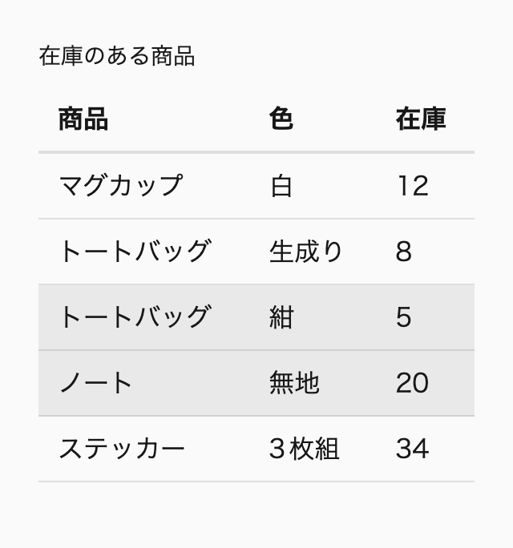
幅 320px
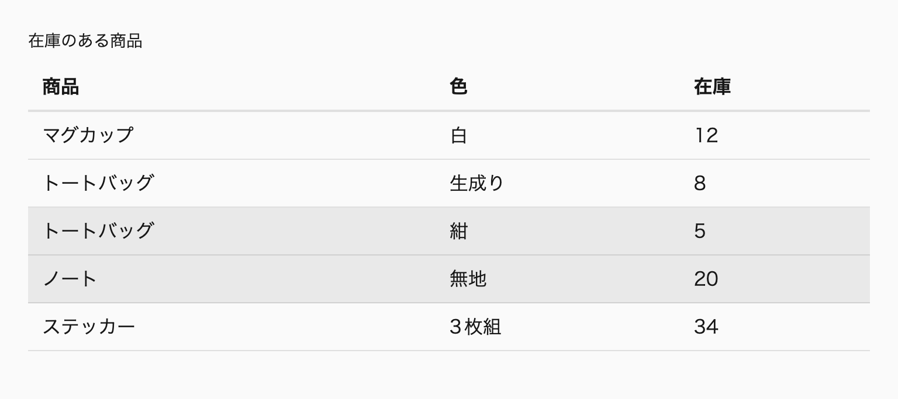
幅 768px
クラスで絞った中での順番を選ぼうとして、:nth-of-type() を使う誤りもよく見かけます。._post:nth-of-type(2) は「2番目の ._post」を選ぶように見えますが、:nth-of-type() が数えるのはタグ名だけです。この書き方の意味は、後ろの見出しで説明します。
数える対象には、目に見えない要素も入ります。たとえば、カードの先頭に <template> や <script> を置くと、その要素が最初の子になり、:first-child は見出しや画像に当たらなくなります。どの擬似クラスも、ブラウザが表示しているかどうかではなく、DOMの兄弟の並びで数えます。
もっとも単純な擬似クラスは、:first-child、:last-child、:only-child の3つです。:first-child は兄弟の中で最初の要素、:last-child は最後の要素、:only-child は兄弟を持たない要素に当たります。:only-child は、:first-child:last-child と同じ要素を選びます。
@scope (.scoped.card-grid) to (.scoped) {
li {
&:only-child {
grid-column: 1 / -1;
}
}
}次のデモでは、同じCSSのグリッドを2つ並べています。カードが3枚の一覧では1枚ずつ列に収まり、1枚だけの一覧では、そのカードが :only-child に当たって行の幅いっぱいに広がります。幅のボタンで375pxを選ぶと列が2つになり、3枚の一覧では3枚目が次の行に回ります。768pxでは列が増え、3枚は1行に並びます。どちらの幅でも、1枚だけのカードは行の幅いっぱいに広がったままです。
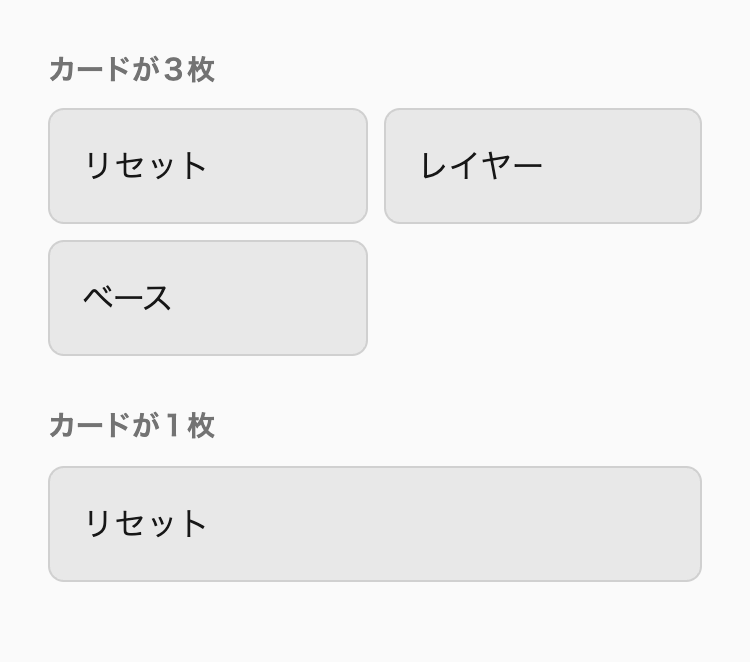
幅 375px
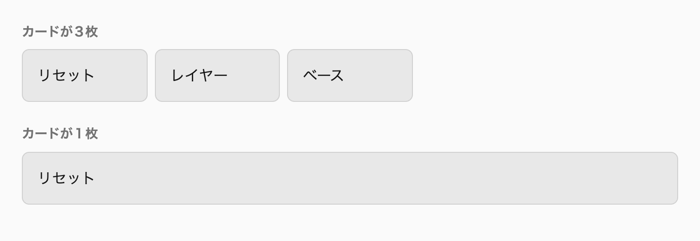
幅 768px
この3つには、:first-of-type、:last-of-type、:only-of-type という対になる擬似クラスがあります。こちらは、同じタグ名の兄弟だけを数えます。p:first-of-type は、前に見出しや画像があっても、兄弟の中で最初の p に当たります。
詳細度は、どれも擬似クラス1つ分の0.1.0です。li:first-child なら、li の0.0.1を足して0.1.1になります。@scope の中でタイプセレクタに付けると、子クラスの0.1.0より高くなるので、子クラスで上書きするつもりの宣言が負けないかに気を付けます※1。
An+B の式の読み方:nth-child() の引数には、An+B の形の式を書きます。n に0、1、2…と0以上の整数を順に入れ、計算した値が1以上になる位置の要素が選ばれます。位置は1から数えます。:nth-child(3n+1) なら、n が0、1、2のときに1、4、7となり、1番目、4番目、7番目の子が選ばれます。
2n + 1 と 2n には、それぞれ odd（奇数番目）と even（偶数番目）というキーワードがあります。縞模様のように意味がそのまま伝わる場面では、キーワードで書きます。A を省いて :nth-child(3) と書けば、3番目の子だけに当たります。
A を負の数にすると、先頭から数個を選べます。:nth-child(-n + 3) は、n が0、1、2のときに3、2、1となり、n が3以上では0以下になるので、先頭の3個に当たります。反対に、:nth-child(n + 4) は4、5、6…となり、4番目以降のすべてに当たります。式の B は境界の位置を、n の符号はその先と手前のどちらへ伸びるかを表します。こう読めば取り違えません。
範囲を選ぶときは、2つの :nth-child() を連結します。:nth-child(n + 4):nth-child(-n + 6) は「4番目以降」と「6番目まで」の両方を満たす要素なので、4番目から6番目に当たります。セレクタを連結すると、それぞれの条件のAND（両方を満たす）になるからです。
@scope (.scoped.news-list) to (.scoped) {
time {
/* 先頭から3件の項目の中 */
&:is(li:nth-child(-n + 3) *) {
color: oklch(48% 0.17 260deg);
font-weight: 700;
}
}
}次のデモでは、5件のお知らせのうち、先頭の3件の日付だけが青の太字になり、4件目と5件目の日付は灰色のままです。
デモ5-4-3 先頭から3件の項目の日付だけを強調する（補足サイト）
:nth-last-child() は、同じ式で末尾から数えます。:nth-last-child(-n + 2) は最後の2個、:nth-last-child(n + 3) は最後の2個を除いたすべてです。:nth-child(-n + 3) のような式は、書いた本人でも数か月後には読み直すのに時間がかかります。上の例のように、選ぶ範囲を文章にしたコメントを添えます。
of S で数える対象を絞るSelectors Level 4では、:nth-child() と :nth-last-child() の引数に of S を続けられます。:nth-child(even of :not([hidden])) は、兄弟のうち :not([hidden]) に当てはまる要素だけを数え、その中で偶数番目のものを選びます。Sに当てはまらない兄弟は、数える対象から外れます。
この書き方で、最初の見出しの表を直します。hidden 属性の付いていない行だけを数えるので、隠した行がいくつあっても、見えている行は1行おきに色が付きます。HTMLは前のデモと同じで、CSSの :nth-child() の引数だけを変えています。
@scope (.scoped.stock-table) to (.scoped) {
tbody tr {
&:nth-child(even of :not([hidden])) {
background-color: oklch(96% 0.02 260deg);
}
}
}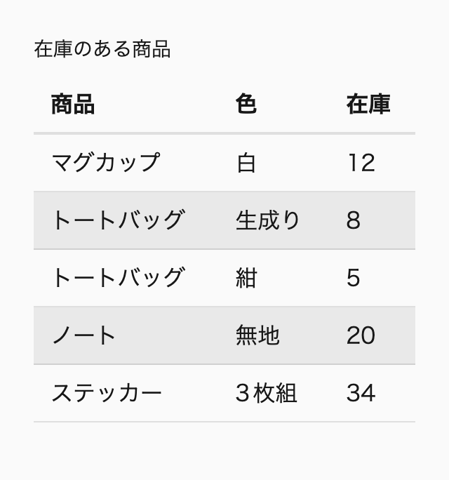
幅 320px
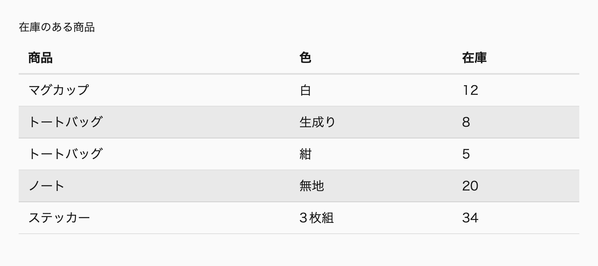
幅 768px
Sには、クラス、属性、擬似クラスを含むセレクタのリストを書けます。:nth-child(-n + 3 of ._pickup) は「._pickup の中で先頭から3個」、:nth-child(1 of :checked) は「チェックされたものの中で最初の1個」です。詳細度は、擬似クラス1つ分にSの中でいちばん高いセレクタの詳細度を足した値です。:nth-child(even of :not([hidden])) は、0.1.0に [hidden] の0.1.0を足して0.2.0になります。
Sが判定するのは、セレクタに当てはまるかどうかだけです。メディアクエリやクラスで display: none にした要素は、Sで除かない限り数えられます。表示を切り替える手段を hidden 属性にそろえておけば、:not([hidden]) の1つで、隠した要素を数えずに済みます。
of S は、Chrome 111、Safari 9、Firefox 113から使え、2023年5月から主要なブラウザで使えます（2026年10月確認）。Safariは長く先行して対応しており、Firefoxの対応が最後でした。
:nth-of-type() との違い:nth-of-type() は、同じタグ名の兄弟だけを数える擬似クラスです。式の書き方は :nth-child() と同じで、p:nth-of-type(2) は兄弟の中で2番目の p に当たります。数える単位はタグ名に限られ、クラスや属性では数えません。
そのため、._post:nth-of-type(2) は「2番目の ._post」を選びません。この式は「同じタグ名の兄弟の中で2番目にあり、かつ ._post でもある要素」を選びます。次のHTMLでは、2つ目の li が ._ad なので、._post:nth-of-type(2) に当たる要素はありません。
<ul>
<li class="_post">…</li>
<li class="_ad">…</li>
<li class="_post">…</li>
</ul>/* 🙅♂ Not Recommended */
._post:nth-of-type(2) {
/* 2つ目の li は ._ad なので、どの要素にも当たらない */
border-block-start: 1px solid;
}「2番目の ._post」を選ぶなら、:nth-child(2 of ._post) と書きます。._post だけを数えるので、間に広告の li が入っても、3つ目の li が選ばれます。クラス、属性、状態のどれで絞るときも同じ形で書けるので、本書では、絞った中での順番はすべて of S で書きます。
@scope (.scoped.post-list) to (.scoped) {
li {
&:nth-child(2 of ._post) {
border-block-start: 1px solid;
}
}
}次のデモでは、同じ3つの li に、左は ._post:nth-of-type(2)、右は :nth-child(2 of ._post) で枠線と背景色を付けています。左はどの項目にも色が付かず、右は3つ目の「記事B」に色が付きます。
デモ5-4-5 :nth-of-type() はタグ名で数え、of S はクラスで絞って数える（補足サイト）
:nth-of-type() が適しているのは、種類の違う要素が混ざった並びで、ある種類の何番目かを選ぶときです。記事の本文で最初の p だけ文字を大きくする、といった場面では、p:first-of-type のほうが意図をそのまま表します。ただし、本書の規約ではタイプセレクタの順番に頼る場面自体が多くありません。
sibling-index() と sibling-count()ここまでの擬似クラスは、位置を条件にして要素を選ぶものでした。sibling-index() と sibling-count() は、位置そのものを値として返す関数です。sibling-index() は兄弟の中で何番目かを、sibling-count() は自分を含む兄弟の数を、どちらも整数で返します。:nth-child() と同じく1から数えるので、最初の子の sibling-index() は1です。
返す値は整数なので、calc() の中で角度や時間に変えられます。項目ごとに色相を少しずつずらす指定は、:nth-child() で書くと項目の数だけルールが要りますが、sibling-index() なら1つの式で済み、項目を足しても式を書き足す必要がありません。同じ式で animation-delay を項目ごとに遅らせれば、項目が順に現れる演出も書けます※2。
Baseline新しく利用可能2026年8月から
sibling-index() と sibling-count()
web-features 3.40.0 のデータ（2026年9月確認）
2026年8月にSafari 26.2が対応し、主要なブラウザの最新版がそろいました（Chrome 138、Firefox 154）。ただし、本書の対象のブラウザのうち、Safari 18系の最終版は対応していません（2026年10月確認）。そのため本書では、未対応の環境で失われても困らない装飾の値に限って使い、@supports の中に書きます。レイアウトの要に使わないのは、未対応の環境で表示が崩れるからです※3。
@scope (.scoped.topic-list) to (.scoped) {
li {
--_hue: 250deg;
border-inline-start: 4px solid oklch(60% 0.12 var(--_hue));
@supports (z-index: sibling-index()) {
/* 1項目ごとに色相を40度ずつずらす */
--_hue: calc(210deg + sibling-index() * 40deg);
}
}
}次のデモでは、5つの項目の行頭側に線を引いています。sibling-index() に対応したブラウザでは、線の色相が項目ごとに40度ずつずれ、1つ目の青から順に紫、赤紫の側へ変わっていき、未対応のブラウザでは5本とも同じ青の線になります。
デモ5-4-6 対応した環境では、項目ごとに線の色相がずれる（補足サイト）
@supports を省くと、未対応の環境で線が消えます。カスタムプロパティは中身を検証せずに受け取るので、--_hue には解釈できない式がそのまま入り、それを使う border-inline-start が計算値の時点で無効になるからです。@supports の中に書けば、未対応の環境ではすべての項目が同じ色相の線になります。線の色は装飾なので、色相がそろっても、項目の内容は文字で伝わります。
数える対象は :nth-child() と同じで、of S のような絞り込みはありません。hidden 属性で隠した項目も兄弟として数えるので、絞り込みのある一覧では、見えている項目の色相が飛び飛びになります。子の数を扱う点では「5-5 数量クエリ」と似ていますが、役割が違います。数量クエリは「3件以上なら」のように数を条件にして宣言を切り替え、sibling-count() は数を式に入れて連続的に変わる値を作ります。件数で見た目を切り替える処理は、本書の対象のブラウザがすべて対応している数量クエリで書きます。
位置で選ぶのは、順番そのものが条件になる場面だけです。縞模様、先頭の数件の強調、最後の要素の後ろに区切りを付けない処理などです。役割の決まった子を :first-child や :last-child で選ぶと、HTMLの順番を入れ替えたり要素を足したりしたとき、スタイルが別の子に当たります。
「12-5 sidebar：メインとサイドの2カラムにし、狭ければ縦に積む（巻2）」も、同じ理由で、メインとサイドを & > :first-child ではなく専用のクラスで選びます。サイドを先に書く場合があり、位置で選ぶとメインとサイドが入れ替わるからです。役割で区別する子には、@scope の中のタイプセレクタか、役割の名前の子クラスを使います。
子要素の間隔も、位置で選んで作りません。すべての子に margin-bottom を付けて :last-child で打ち消す書き方は、要素の順番を変えるたびに打ち消しの対象を確かめ直すことになります。間隔は親の gap で作ります※4。見出しや段落が続く本文では、2つ目以降の子に margin-block-start を付けるコンポジション prose を使います※5。
子の数によってレイアウトを切り替える処理も、:nth-child() と :nth-last-child() の組み合わせで書けます。:first-child:nth-last-child(3) は、兄弟がちょうど3つのときの最初の子です※6。
推奨クラスや状態で絞った中での順番は :nth-child(N of S) で書き、:nth-of-type() を代わりに使わない（._post:nth-of-type(2) ではなく :nth-child(2 of ._post)）。
nth-child-of-over-nth-of-type
推奨子要素を位置で選ぶのは、縞模様や先頭の数個のように順番そのものが条件になるときに限り、役割の決まった子はタイプセレクタか子クラスで選ぶ。
select-roles-not-positions
推奨sibling-index() と sibling-count() は、色相や遅延のように未対応の環境で失われても困らない装飾の値に限って使い、@supports (z-index: sibling-index()) の中に書いて、外に未対応の環境で使う値を書く。
sibling-functions-for-decoration
数量クエリ（quantity queries）は、子要素の数に応じてスタイルを切り替える手法の総称です。専用の構文があるわけではなく、子要素の位置で選ぶ擬似クラスを組み合わせて「3つ以上ある」「最後の1つが奇数番目にある」といった条件を表します。書き方は、スタイルを変える対象で選びます。親や兄弟の見た目を変えるときは、&:has(> :nth-child(3)) のように親を起点にした :has() で書きます。数えた子要素そのものの見た目を変えるときは、& > :nth-child(2n + 1):nth-last-child(1) のように子の側で :nth-child() と :nth-last-child() を組み合わせます。
数量クエリを使う場面は限ります。列数のようなレイアウトの切り替えは、まず auto-fit やコンテナサイズクエリで行います。数量クエリを使うのは、「1件だけなら中央に置く」「最終行の端数を中央に寄せる」「引用がなければ特集を全幅に広げる」のように、子要素の数や有無そのものが条件になるときだけです※1。
Baseline広く利用可能2026年6月から（新しく利用可能になったのは2023年12月）
:has()
web-features 3.40.0 のデータ（2026年9月確認）
お知らせや関連記事の一覧は、CMSの登録状況によって件数が変わります。3件や6件のときに整って見えるカードの一覧も、1件だけになると、カードが行いっぱいに引き伸ばされたり、左端に1枚だけ残ったりします。件数が少ないときや、最終行が埋まらないときだけ並べ方を変えたい、という要望は珍しくないでしょう。
CSSのセレクタには、子要素の数を直接表す仕組みがありません。そのため、テンプレートの側で件数を数え、is-single や has-3-items のようなクラスを親に付けて出し分けることがよくありました。JavaScriptで描画する一覧なら、項目を追加したり削除したりするたびに、クラスを付け直す処理も必要です。
/* 🙅♂ Not Recommended */
.pickup-list {
&.is-single {
grid-template-columns: minmax(0, calc(400 / 16 * 1rem));
justify-content: center;
}
}この方法では、クラスと実際の件数は、ずれることがあります。項目を絞り込む機能を後から足したときに、クラスを更新する処理を書き漏らすと、見た目が件数と合わなくなります。件数という情報が、DOMの構造とクラスの2か所に分かれているからです。数量クエリを使えば、DOMの構造だけを条件にして、件数による切り替えをCSSの中で完結できます。
数量クエリは、:has() が使えるようになる前から知られていました。代表的な記事は、A List Apartが2015年に掲載した「Quantity Queries for CSS」です（参考リンク）。子要素の位置で選ぶ擬似クラスだけで、条件を子の側から表します。
:nth-child() は前から、:nth-last-child() は後ろから数えるので、2つを組み合わせると、子の位置と全体の数を同時に条件にできます。li:first-child:nth-last-child(3) は、「先頭で、かつ後ろから3番目」、つまり兄弟がちょうど3つのときの最初の子です。li:nth-child(odd):last-child は、「奇数番目で最後」の子で、子の数が奇数のときの最後の子です。スタイルが当たるのは、数えた子そのものです。
この書き方には、親や兄弟を変えられないという限界があります。選ばれるのは数えた子なので、親の grid-template-columns や justify-content は切り替えられません。ほかの兄弟を変えるには、li:nth-last-child(n + 3), li:nth-last-child(n + 3) ~ li のように、~ の結合子で後ろの兄弟を拾う組を作る必要があります。この組は、「後ろから数えて3番目以降があるなら、全体は3つ以上ある」という逆算をしなければ、意味が取れません。
/* 🙅♂ Not Recommended */
li:nth-last-child(n + 3),
li:nth-last-child(n + 3) ~ li {
/* 3つ以上あるときの、すべての li */
flex-basis: 30%;
}:has() で数える:has() を使うと、条件を親から直接書けます。&:has(> :nth-child(3)) は「3番目の子を持つ親」、つまり子が3つ以上ある親です。スタイルが当たるのは親なので、親自身のレイアウトを変えられます。すべての子や見出しのような兄弟を変えたいときも、親でカスタムプロパティの値を切り替えれば、条件の判定は1か所で済みます。
@scope (.scoped.item-list) to (.scoped) {
:scope {
/* ちょうど3つ */
&:has(> :nth-child(3):last-child) {
/* ... */
}
/* 3つ以上 */
&:has(> :nth-child(3)) {
/* ... */
}
/* 3つ以下（0個は含まない） */
&:has(> :last-child:nth-child(-n + 3)) {
/* ... */
}
/* 2〜4つ */
&:has(> :nth-child(2)):not(:has(> :nth-child(5))) {
/* ... */
}
}
}「ちょうど3つ」は、3番目の子が最後の子でもある、という条件です。「3つ以上」は、3番目の子が存在する、という条件です。「3つ以下」は、最後の子が先頭から3番目以内にある、という条件で、子が0個のときは最後の子がないので当てはまりません。0個も含めたいときは、&:not(:has(> :nth-child(4))) と書きます。範囲の条件は、「N個以上」と「M＋1個以上ではない」を組み合わせます。:not() の中に :has() を入れる形は、「5-3 :has() で祖先と前の兄弟を選ぶ」で説明した「持たない」の書き方と同じです。上の4つの式は、2026年10月にChromeで、子が0〜6個の場合について当てはまり方を確認しました。
反対に、数えた子そのものを変えるときは、:has() を使わずに子の側で書きます。「子の数が奇数のときの最後の子」を :has() で書くと、&:has(> :nth-child(odd):last-child) > :last-child のように、親と子の2か所に同じ条件が現れます。& > :nth-child(odd):last-child なら、条件と対象が1つのセレクタにまとまります※2。
> を省かない:has() で数えるときも、起点のない :has() は書きません。:has(> :nth-child(3)) とだけ書くと、ページのすべての要素が起点になり、DOMが変わるたびに、ブラウザの調べ直す範囲が広がります。ネストしたルールの中では、必ず & から書き始めます（ルール no-unanchored-has）。
/* 🙅♂ Not Recommended */
:has(> :nth-child(3)) {
grid-template-columns: repeat(3, 1fr);
}
.item-list {
&:has(:nth-child(3)) {
grid-template-columns: repeat(3, 1fr);
}
}引数の > も省けません。&:has(:nth-child(3)) は、直下の3番目の子ではなく、「子孫のどこかにある、自分の親から見て3番目の要素」を探します。一覧の項目の中に、子要素を3つ以上持つものが1つでもあれば、項目が1つしかなくても当てはまります。子の側で数えるときも同じで、& > :nth-child(odd):last-child の > を省くと、孫の位置の要素まで選びます。
@scope (.scoped.item-list) to (.scoped) {
:scope {
display: block grid;
&:has(> :nth-child(3)) {
grid-template-columns: repeat(3, 1fr);
}
}
}次のデモは、項目が1つだけの一覧に、3つ以上なら3列にする指定を当てたものです。項目の中にタグが3つあるので、> を省いた上の一覧は、タグの3つ目に当てはまって3列になり、1つだけの項目が1列分の幅に縮みます。> を付けた下の一覧は、直下の項目だけを数えるので1列のままです。
デモ5-5-1 > を省くと、項目の中のタグまで数えて3列になる（補足サイト）
数量クエリを覚えると、列数の切り替えにも使いたくなります。たとえば、項目が2つなら2列、3つ以上なら3列にする、という指定です。
/* 🙅♂ Not Recommended */
.pickup-list {
display: block grid;
&:has(> :nth-child(2)) {
grid-template-columns: repeat(2, 1fr);
}
&:has(> :nth-child(3)) {
grid-template-columns: repeat(3, 1fr);
}
}この指定は、一覧が使える幅を考えていません。同じ一覧をサイドバーのような狭い場所に置くと、3件あれば3列のまま、1列あたりの幅が数十pxまで縮みます。列数を決める本当の条件は、項目の数ではなく、項目を何列並べられるだけの幅があるかです。
列数は、repeat() の auto-fit と minmax() に任せます。auto-fit は列の最小幅を下回らない範囲で列を作り、項目のない列を幅0に畳むので、項目が2つなら2列に広がり、幅が足りなければ列は減ります※3。
一方、auto-fit でも解決できないのが、項目が1つだけの場合と、最終行が埋まらない場合です。auto-fit は残った1つの項目を行いっぱいに広げ、最終行の端数は行の先頭に寄せます。どちらも幅ではなく件数そのものが条件なので、数量クエリの出番です※4。
次のデモは、同じピックアップの一覧に、項目を1件、2件、3件、5件入れて並べたものです。列の数は幅から決まり、最小幅は200px相当、多くても3列までにしています。項目が1件のときだけ、親を起点にした :has() で列の幅を400px相当に固定し、中央に置いています。変えるのは親の grid-template-columns なので、:has() で書きます。
@scope (.scoped.pickup-list) to (.scoped) {
:scope {
display: block grid;
grid-template-columns: repeat(auto-fit, minmax(min(100%, calc(200 / 16 * 1rem)), 1fr));
gap: 16px;
&:has(> :only-child) {
grid-template-columns: minmax(0, calc(400 / 16 * 1rem));
justify-content: center;
}
}
}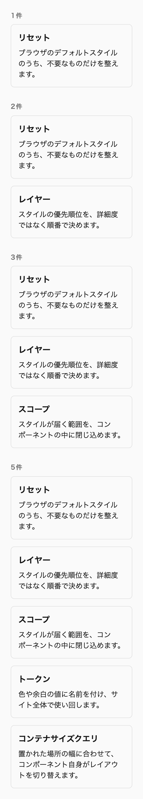
幅 320px
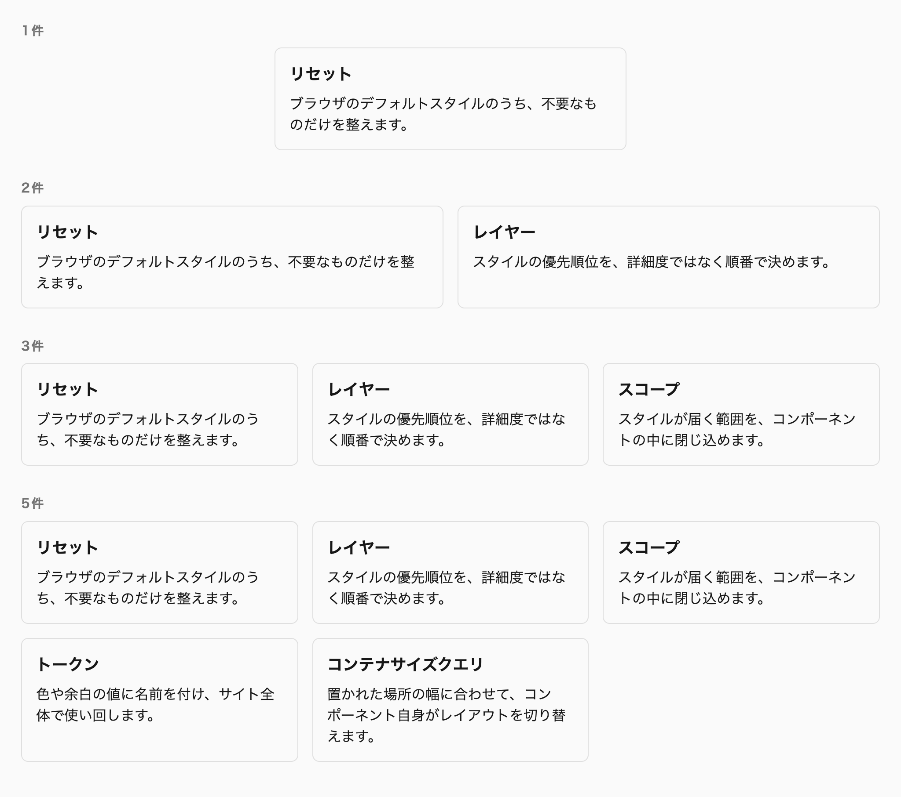
幅 1024px
幅のボタンで1024pxを選ぶと、2件の一覧は2列に、3件と5件の一覧は3列に並びます。2件の一覧が2列いっぱいに広がるのは、auto-fit が3列目を畳んでいるからで、数量クエリは関わっていません。1件の一覧は、どの幅でも400px相当を超えず、中央に置かれます。デモの grid-template-columns には、列の最大数を3に抑える計算を加えています。第12章「12-6 grid：列の最小幅と最大数から列数を決める（巻2）」と同じ考え方で、コード例では省いています。
:has() で数える数量クエリの詳細度は、引数の分だけ上がります。:scope の中で &:has(> :only-child) と書くと、:scope（0.1.0）に :only-child（0.1.0）が加わり、0.2.0になります。子の側の & > :nth-child(2n + 1):nth-last-child(1) も、親のクラスに擬似クラス2つが加わって0.3.0です。どちらも元のスタイルより詳細度が高いので、書く順序によらず上書きできます。
数えるのは要素だけです。テキストノードやコメントは数えず、::before などの擬似要素も子に含みません。一方、hidden 属性や display: none で見えなくなった要素は、DOMにある限り数えられます。絞り込みによって項目を隠す一覧では、&:has(> :nth-child(3 of :not([hidden]))) のように of S 構文で数える対象を絞ります。
Baseline広く利用可能2025年11月から（新しく利用可能になったのは2023年5月）
:nth-child() の of S 構文
web-features 3.40.0 のデータ（2026年9月確認）
数量クエリの条件は、子要素の並びが変わるとその場で判定し直されます。JavaScriptで項目を追加したり削除したりしても、クラスを付け直す処理は要りません。
子の数を値として式に入れる sibling-count() という関数もあります。数量クエリが数を条件にして宣言を切り替えるのに対し、sibling-count() は数から連続的に変わる値を作ります。2026年10月の時点では本書の対象のブラウザのすべてが対応してはいないので、件数で見た目を切り替える処理は数量クエリで書きます※5。
推奨子要素の数で親や兄弟の見た目を変えるときは、&:has(> :nth-child(3)) のように親を起点にした :has() で数え、数えた子要素そのものの見た目を変えるときは、& > :nth-child(2n + 1):nth-last-child(1) のように子の側で :nth-child() と :nth-last-child() を組み合わせる。
quantity-query-with-has
推奨列数のようなレイアウトの切り替えは auto-fit やコンテナサイズクエリで行い、数量クエリは「1件だけなら中央に置く」「最終行の端数を中央に寄せる」のように、子要素の数そのものが条件のときに限って使う。
quantity-query-for-count-conditions
フォームの状態は、:user-invalid、:checked、:disabled、:placeholder-shown のような擬似クラスで選びます。ブラウザが管理する状態をそのまま参照するので、JavaScriptで状態のクラスを付け外しする必要はありません。ただし、どの擬似クラスも、名前から想像する範囲と、実際に当てはまる範囲が少しずつ違います。
:invalid は操作する前から当てはまり、:read-only は編集できないすべての要素に当てはまり、:placeholder-shown は placeholder 属性のある入力欄にしか当てはまりません。この節では、仕様（HTML Living Standardの「Pseudo-classes」の節と、Selectors Level 4）が定める条件を擬似クラスごとに確かめ、取り違えやすいものの書き方をルールにします。ARIA属性でしか表せない状態は、属性セレクタで補います。
フォームの状態を表す擬似クラスは、名前が状態そのものを表しているので、条件を確かめずに使われがちです。しかし、:invalid は「ユーザーが誤った値を入力した」ときではなく、「値が制約を満たしていない」ときに当てはまります。required を付けた空の入力欄は、ページを開いた時点で :invalid です。
:read-only も同じです。名前からは readonly 属性を付けた入力欄を選ぶように見えますが、仕様では「:read-write に当てはまらない、すべての要素」に当てはまります。段落も、チェックボックスも、ボタンも :read-only です。
こうした違いは、見た目の不具合として表に出ます。ページを開いた直後にエラーの赤い枠が出る、読み取り専用の灰色の背景がチェックボックスにまで付く、といった不具合です。名前だけを見て次のように書くと、どちらも起きます。
/* 🙅♂ Not Recommended */
input {
/* 「誤った値を入力した」のつもりで、開いた時点の空の必須の欄にも当たる */
&:invalid {
border-color: oklch(50% 0.2 25deg);
}
/* 「readonly を付けた欄」のつもりで、チェックボックスにも当たる */
&:read-only {
background-color: oklch(93% 0 0deg);
}
}どれも、擬似クラスの書き方ではなく、当てはまる条件の理解の不足から起きます。以下では、検証、選択、操作の可否、入力の有無の順に、条件を確かめます。
:valid と :invalid は、制約の検証（constraint validation）の結果を表します。required、type="email"、pattern、min などの制約を満たしていれば :valid、満たしていなければ :invalid です。判定は値が変わるたびに行われ、ユーザーが操作したかどうかは問いません。
検証の対象にならない要素は、どちらにも当てはまりません。無効にした入力欄、readonly を付けた入力欄、type="hidden" の入力欄は、検証の対象から外れます。required と readonly を両方付けた空の入力欄は、:invalid になりません（Chrome 152で確認、2026年10月）。一方、<form> と <fieldset> は、中に :invalid の要素が1つでもあれば :invalid です。
:user-valid と :user-invalid は、ユーザーが値を変えて入力欄を離れた後か、送信しようとした後にだけ当てはまります※1。正しく入力できたことを示す見た目も、同じ理由で :valid ではなく :user-valid に指定します。
@scope (.scoped.contact-form) to (.scoped) {
input {
&:user-invalid {
border-color: oklch(50% 0.2 25deg);
}
&:user-valid {
border-color: oklch(50% 0.13 150deg);
}
}
}次のデモの2つの欄は、どちらも required を付けたメールアドレスの欄です。上の :invalid の欄は、何も操作していないうちからエラーの色になります。下の :user-invalid の欄は、不正な値を入れて欄を離れるか、空のまま「送信する」を押すまで、エラーの色になりません。
デモ5-6-1 :invalid は開いた時点で、:user-invalid は操作の後にエラーの見た目になる（補足サイト）
Baseline広く利用可能2026年5月から（新しく利用可能になったのは2023年11月）
:user-valid と :user-invalid
web-features 3.40.0 のデータ（2026年9月確認）
:required と :optional は、required 属性の有無だけで決まります。値が入っているかどうかは関係しません。値によらない見た目、たとえばラベルの横の「必須」の印に使います。:valid と :invalid、:required と :optional は、どちらも以前からすべての主要なブラウザで使えます。
Baseline広く利用可能2018年1月から（新しく利用可能になったのは2015年7月）
Form validity pseudo-classes
web-features 3.40.0 のデータ（2026年9月確認）
:checked は、チェックされたチェックボックスとラジオボタン、選ばれた <option> に当てはまります。参照するのは checked 属性ではなく、現在の状態です。ユーザーがチェックを外せば、HTMLに checked 属性が残っていても当てはまらなくなります。
:default は、反対に初期値を表します。HTMLに checked 属性を書いたチェックボックスとラジオボタン、selected 属性を書いた <option>、フォームの既定の送信ボタンに当てはまります。ユーザーが別の選択肢を選んでも、:default は初期値の選択肢に残ります。おすすめの選択肢に印を付けておき、ほかを選んだ後も、どれがおすすめだったかを示したい場合に使えます。
:indeterminate は、どちらとも決まっていない状態です。対象は3つあり、JavaScriptで indeterminate プロパティを true にしたチェックボックス、同じ name のどれもチェックされていないラジオボタン、value 属性のない <progress> に当てはまります。チェックボックスの中間の状態はHTMLの属性では書けないので、JavaScriptで設定します。
@scope (.scoped.check-field) to (.scoped) {
input {
&:checked,
&[type="checkbox"]:indeterminate {
border-color: var(--background--accent);
background-color: var(--background--accent);
}
}
}上の例で &:indeterminate と書かずに [type="checkbox"] を加えているのは、ラジオボタンを除くためです。スコープの中にラジオボタンがあると、まだ何も選んでいないグループのラジオボタンが、すべて :indeterminate に当てはまります。中間の状態の印は、未選択のラジオボタンに付けるものではありません。
次のデモでは、お知らせの一部だけを選ぶと、スクリプトが「すべて選ぶ」の indeterminate を true にし、横線の印が付きます。下の「配信の頻度」のラジオボタンは、どれも選んでいないので :indeterminate に当てはまりますが、[type="checkbox"] で除いているので印は付きません。チェックと中間の状態は背景色が同じなので、内側の余白と横線の形で区別しています。
デモ5-6-2 一部だけを選んだときに、「すべて選ぶ」のチェックボックスを中間の状態にする（補足サイト）
Baseline広く利用可能2022年7月から（新しく利用可能になったのは2020年1月）
:indeterminate
web-features 3.40.0 のデータ（2026年9月確認）
:disabled は、無効になっている要素に当てはまります。disabled 属性を付けた要素だけでなく、disabled を付けた <fieldset> の中のフォーム部品も無効です。:enabled は、ボタン、入力欄、<select>、<textarea>、<option>、<fieldset> などのうち、無効でないものに当てはまります。リンクや div は、:enabled と :disabled のどちらにも当てはまりません。
:read-write は、ユーザーが編集できる要素に当てはまります。readonly を付けておらず、無効でもないテキストの入力欄と <textarea> に加えて、contenteditable を付けた要素も対象です。:read-only はそれ以外のすべての要素で、編集を前提としない要素はすべて含まれます。
/* 🙅♂ Not Recommended */
input {
&:read-only {
background-color: oklch(95% 0 0deg);
}
}上の指定は、readonly を付けたテキストの入力欄だけでなく、チェックボックス、ラジオボタン、ファイルの選択、ボタンの input にも当たります。readonly 属性は、これらの部品には適用されないからです。無効にしたテキストの入力欄も、編集できないので :read-only です（Chrome 152で確認、2026年10月）。
読み取り専用の入力欄を選びたいときは、属性セレクタで &[readonly] と書きます。readonly と disabled は、意味が違います。readonly の入力欄はフォーカスでき、値もフォームと一緒に送信されます。disabled の入力欄はフォーカスできず、値も送信されません。見た目も分けて指定します。
@scope (.scoped.account-form) to (.scoped) {
input {
&[readonly] {
border-color: transparent;
background-color: var(--background--accent-subtle);
}
&:disabled {
color: var(--foreground--muted);
}
}
}次のデモは、同じ4つの部品を、1つ目の枠では &:read-only で、2つ目の枠では &[readonly] と &:disabled で選んだものです。1つ目では、灰色の背景と赤い輪郭が、会員番号の欄だけでなく、無効にした紹介コードの欄とチェックボックスにも付きます。2つ目では、読み取り専用の欄と無効の欄が、別々の見た目になります。
デモ5-6-3 :read-only は無効の欄とチェックボックスにも当たり、[readonly] は読み取り専用の欄だけに当たる（補足サイト）
Baseline広く利用可能2023年1月から（新しく利用可能になったのは2020年7月）
:read-only and :read-write
web-features 3.40.0 のデータ（2026年9月確認）
:placeholder-shown:placeholder-shown は、プレースホルダーが表示されている入力欄と <textarea> に当てはまります。プレースホルダーは値が空のときに表示されるので、「まだ何も入力していない」ことの判定に使えます。CSSには値の有無そのものを表す擬似クラスがないので、入力済みかどうかで見た目を変えるときに使われます。
注意したいのは、placeholder 属性のない入力欄には、値が空でも当てはまらないことです。そのため、:not(:placeholder-shown) で「入力済み」を判定すると、placeholder 属性のない入力欄は、空のままでも入力済みとして扱われます。
/* 🙅♂ Not Recommended */
input {
&:not(:placeholder-shown) {
border-color: var(--foreground--accent);
}
}未入力の状態は、&:placeholder-shown の側に書きます。placeholder 属性のない入力欄では何も起きないので、誤って入力済みの見た目になることはありません。どうしても :not() で書く必要があるときは、&[placeholder]:not(:placeholder-shown) のように属性の有無も条件にします。
@scope (.scoped.profile-form) to (.scoped) {
input {
&:placeholder-shown {
border-style: dashed;
}
}
}次のデモは、placeholder 属性のある「表示名」と、ない「備考」を並べたものです。1つ目の枠の &:not(:placeholder-shown) では、空のままの「備考」が最初から入力済みの太い枠になります。2つ目の枠の &:placeholder-shown では、「表示名」だけが未入力の点線になり、文字を入力すると実線に変わります。
デモ5-6-4 :not(:placeholder-shown) は placeholder 属性のない空の欄も入力済みにする（補足サイト）
ラベルを入力欄の中に重ね、入力すると上に移動させる「フローティングラベル」では、判定のためだけに placeholder=" " と空白1文字を書く方法が知られています。本書では、この方法を使いません。placeholder 属性は入力の手がかりを示すためのもので、見た目の判定のために値を入れると、入力例という本来の役割と混ざるからです。ラベルは入力欄の外に置き、入力例を placeholder に書きます。
Baseline広く利用可能2022年7月から（新しく利用可能になったのは2020年1月）
:placeholder-shown
web-features 3.40.0 のデータ（2026年9月確認）
:autofill は、ブラウザの自動入力で値が入った入力欄に当てはまります。ただし、ChromeのUAスタイルシートは自動入力した入力欄の背景色と文字色を !important で指定しているので、それらは上書きできません（MDN、2026年10月確認）。枠線のように、UAスタイルシートが固定していないプロパティだけを変えられます。仕様は :-webkit-autofill も同じ意味の別名として定めています。
Baseline一部のブラウザのみ
:autofill
web-features 3.40.0 のデータ（2026年9月確認）
::placeholder は、プレースホルダーの文字を選ぶ擬似要素です。ブラウザの既定のプレースホルダーは薄い色で、Chromeは darkgray、Firefoxは入力欄の文字色を54%の不透明度にした色を使います（MDN）。どちらも、白い背景とのコントラスト比が、WCAGが本文の文字に求める4.5:1に届かないことがあります。
プレースホルダーの色は、color で背景とのコントラスト比が4.5:1以上になる色を指定します。opacity で薄くすると、背景の色が透けて見え、背景が変わるたびにコントラスト比も変わります。本書が推奨するkiso.cssは、::placeholder の opacity を初期値に戻して、ブラウザの差をなくしています※2。
Baseline広く利用可能2022年7月から（新しく利用可能になったのは2020年1月）
::placeholder
web-features 3.40.0 のデータ（2026年9月確認）
::file-selector-button は、<input type="file"> の「ファイルを選択」のボタンを選ぶ擬似要素です。入力欄全体ではなく、ボタンの部分だけに枠線や背景色を指定できます。kiso.cssは、このボタンにもほかのボタンと同じ枠線とフォントの初期値を指定しています。
Baseline広く利用可能2023年10月から（新しく利用可能になったのは2021年4月）
::file-selector-button
web-features 3.40.0 のデータ（2026年9月確認）
次のデモは、ここまでの擬似クラスと擬似要素を組み合わせたフォームです。未入力の欄は点線の枠になり、表示名を入力すると実線に変わります。会員番号は readonly なので青みのある背景、紹介コードは disabled なので灰色です。メールアドレスを空のまま「保存する」を押すか、不正な値を入れて欄を離れると、エラーの見た目になります。
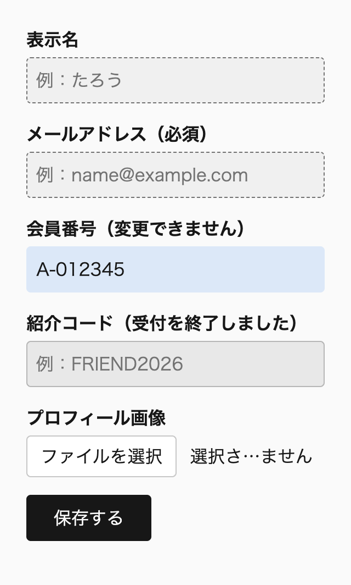
幅 320px
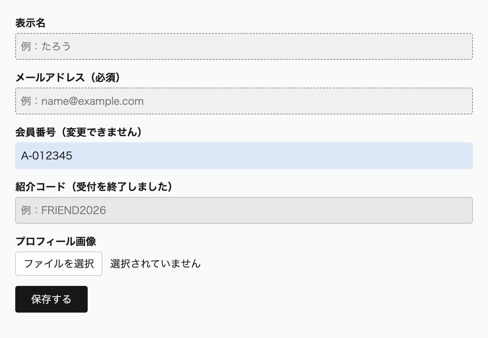
幅 768px
状態のスタイルは、まずネイティブの擬似クラスで書きます。disabled 属性や required 属性で表せる状態は、ブラウザが操作の可否や検証の結果まで管理し、支援技術にも伝えるからです。状態のクラスを使わず、擬似クラスかARIA属性をセレクタにする方針は、第17章「17-3 状態を属性で表す（巻3）」のルール state-by-pseudo-class-or-aria で定めています。
ただし、同じ状態を、ネイティブの属性ではなくARIA属性で表す場面があります。送信ボタンを disabled にすると、フォーカスの順序から外れ、Tabキーでボタンにたどり着けなくなります（MDN）。そこで、フォーカスを残したまま aria-disabled="true" で無効を伝えることがあります。サーバーで検証した結果のエラーも、ブラウザの制約の検証では表せないので、JavaScriptで aria-invalid="true" を付けます。
aria-disabled="true" を付けた要素は :disabled に、aria-invalid="true" を付けた要素は :user-invalid に当てはまりません。ARIA属性は支援技術に状態を伝えるだけで、ブラウザの状態は変えないからです（MDN）。片方にだけ見た目を指定すると、同じ「無効」や「エラー」の状態でも、見た目の変わらない要素が出ます。
@scope (.scoped.profile-form) to (.scoped) {
input {
&:is(:user-invalid, [aria-invalid="true"]) {
border-color: var(--foreground--danger);
}
}
button {
&:is(:disabled, [aria-disabled="true"]) {
background-color: var(--background--active);
}
}
}kiso.cssも、:where(:disabled, [aria-disabled="true" i]) に cursor: default を指定して、両方を同じ状態として扱っています。なお、aria-disabled="true" はクリックやキー操作を止めません。操作を止める処理は、JavaScriptで別に書きます。
次のデモでは、「登録する」ボタンに aria-disabled="true" を付けておき、利用規約に同意するとスクリプトで false に変えます。隣の「下書きを保存する」は disabled 属性で無効にしたボタンです。2つの見た目は同じですが、Tabキーでフォーカスできるのは「登録する」だけです。「サーバーのエラーを再現する」を押すと、ユーザー名の入力欄に aria-invalid="true" が付き、メールアドレスを空のまま登録しようとしたときの :user-invalid と同じ色の枠線になります。
デモ5-6-6 aria-disabled と aria-invalid の状態を、:disabled と :user-invalid と同じ見た目にする（補足サイト）
推奨入力の有無で見た目を変えるときは、入力例を書いた placeholder 属性のある入力欄に :placeholder-shown を使い、placeholder 属性のない入力欄を :not(:placeholder-shown) で「入力済み」と判定しない。
placeholder-shown-with-hint
推奨同じ状態をネイティブの属性と ARIA 属性の両方で表すことがあるときは、&:is(:disabled, [aria-disabled="true"]) や &:is(:user-invalid, [aria-invalid="true"]) のように、擬似クラスと属性セレクタをまとめて指定する。
native-and-aria-state-together
推奨読み取り専用の入力欄の見た目は &[readonly] に指定し、input:read-only のように、要素の種類を限らずに :read-only を使わない。
readonly-attribute-for-text-field
必須::placeholder の文字は color で色を指定し、背景とのコントラスト比を 4.5:1 以上にする。opacity で薄くしない。
placeholder-color-contrast
開閉の状態は、JavaScriptで付け外しするクラスではなく、要素自身の状態をセレクタにして選びます。<details> と <dialog> は [open] 属性セレクタで、popover 属性の要素は :popover-open で、モーダルとして開いたダイアログは :modal で選びます。2026年5月にすべての主要なブラウザが対応した :open は、本書の対象のSafariが対応するまで使いません（2026年10月確認）。
開いた状態をどこに持つかは、要素によって違います。open 属性で表す要素、属性を持たず擬似クラスでしか表せない要素、開き方によって当てはまる擬似クラスの変わる要素があります。この節では、それぞれのセレクタが当てはまる条件を比べます。あわせて、ページ内リンクの移動先を表す :target と、中身の有無を表す :empty を説明します※1。
開いたメニューやアコーディオンには、JavaScriptで .is-open のようなクラスを付けて、スタイルを切り替えることがよくあります。しかし、<details> や popover 属性の要素は、ブラウザが自分で開閉し、開いているかどうかを要素の状態として持っています。そこにクラスを足すと、同じ状態を要素の状態とクラスの2か所で持つことになります。
/* 🙅♂ Not Recommended */
.filter-details.is-open {
border-color: oklch(48% 0.17 260deg);
}2か所の状態は、ずれることがあります。<details> は、<summary> のクリックやキー操作のほか、対応したブラウザではページ内検索で中身が見つかったときにも開きます。popover="auto" のポップオーバーは、外側のクリックやEscキーで閉じます。こうした開閉はボタンのクリックの処理を通らないので、クラスを付け外しする処理から漏れやすくなります。状態のスタイルを擬似クラスとARIA属性で表す方針は、第17章「17-3 状態を属性で表す（巻3）」のルールで定めています。
ただし、要素自身の状態を使う場合も、選ぶセレクタは要素によって違います。次の表は、この節で扱う要素と、開いた状態を選ぶセレクタの対応です。
| 要素 | 開いた状態に当てはまるセレクタ | 本書で使うもの |
|---|---|---|
<details> |
[open]、:open |
[open] |
show() で開いた <dialog> |
[open]、:open |
[open]:not(:modal) |
showModal() で開いた <dialog> |
[open]、:open、:modal |
:modal |
popover 属性の要素 |
:popover-open |
:popover-open |
<select>、ピッカーを持つ <input> |
:open |
:open（装飾に限る） |
[open] 属性と :open 擬似クラス<details> と <dialog> は、開いている間 open 属性を持ちます。<summary> をクリックして開くとブラウザが open 属性を付け、閉じると外します。name 属性で1つだけを開くアコーディオンにした場合も、ほかの項目を開いたときに、ブラウザが元の項目の open 属性を外します。属性が状態をそのまま表しているので、[open] 属性セレクタで開いた状態を選べます。
:open は、開いた状態を表す擬似クラスです。<details> と <dialog> では、open 属性を持つときに当てはまり、[open] と同じ要素を選びます。違うのは、属性を持たない状態にも当てはまる点です。<select> のドロップダウンや、<input type="color"> のような入力欄のピッカーを表示している間も :open になります。一方、popover 属性の要素には当てはまりません。詳細度は、どちらも0.1.0です。
Baseline新しく利用可能2026年5月から
:open
web-features 3.40.0 のデータ（2026年9月確認）
:open には2026年5月にすべての主要なブラウザが対応しましたが、Safariが対応したのは26.5からです。本書の対象はSafari 18.6以降なので（第1章「1-2 ブラウザサポートとプログレッシブ・エンハンスメント」）、対象のすべてでは使えません。<details> と <dialog> は [open] で同じ要素を選べるので、対応がそろうまでは [open] を使います。
[open] と :open を並べて書く必要もありません。セレクタリストの中に解釈できないセレクタが1つでもあると、ルール全体が無効になるからです。次の例は、:open に対応していないSafariでは、[open] の側も含めて当たりません。:is() で包めば無効にはなりません。しかし、<details> では2つが同じ要素を選ぶので、並べても選べる要素は増えません。
/* 🙅♂ Not Recommended */
details {
&:open,
&[open] {
border-color: oklch(48% 0.17 260deg);
}
}@scope (.scoped.filter-details) to (.scoped) {
:scope {
border: 1px solid oklch(80% 0 0deg);
&[open] {
border-color: oklch(48% 0.17 260deg);
}
}
}次のデモは、name 属性で1つだけを開くアコーディオンです。開いている項目の枠線を、[open] でアクセントの色にしています。別の項目を開くと、ブラウザが元の項目の open 属性を外すので、枠線の色も一緒に移ります。
デモ5-7-1 name 属性のアコーディオンで、開いている項目だけを [open] で選ぶ（補足サイト）
<select> のドロップダウンを開いている間は、:open でしか選べません。使うなら、未対応の環境で見た目が変わらなくても困らない装飾に限ります。ほかのセレクタとリストにせず、&:open だけのルールに書けば、解釈できないブラウザではそのルールだけが無効になります※2。
:popover-open とポップオーバーの状態popover 属性の要素は、表示しているかどうかを属性では表しません。popover 属性は閉じている間も付いたままで、開いても open 属性は付きません。そのため、[popover] は開閉に関係なく当てはまり、[popover][open] は開いていても当てはまりません。表示している状態を選べるのは、:popover-open だけです。
Baseline新しく利用可能2024年4月から
:popover-open
web-features 3.40.0 のデータ（2026年9月確認）
ポップオーバーの状態は、ほかの要素のスタイルの条件にも使えます。次のデモでは、左の <details> が開いている間、[open] で枠線の色を変えています。右のボタンは、直後のポップオーバーを表示している間だけ、&:has(+ :popover-open) で押された見た目になります。外側のクリックやEscキーでブラウザがポップオーバーを閉じたときも、ボタンの見た目は一緒に戻ります。
デモ5-7-2 [open] と :popover-open で、開いている間だけ開閉のボタンの見た目を変える（補足サイト）
ボタンの見た目は、:has() の起点をボタンにし、+ の結合子で直後の兄弟だけを調べて決めています。ナビゲーション全体を起点にして nav:has(:popover-open) と書くこともできますが、引数で探す範囲が広いほど、DOMが変わったときに調べ直す範囲も広がります※3。
閉じたポップオーバーは、ブラウザのデフォルトスタイルの display: none で隠れています。ポップオーバーのルールに display: block grid のような値を書くと、この指定を上書きして、閉じていても表示されます。閉じた <dialog> も同じです。kiso.cssは、閉じた <dialog> と、:popover-open でないポップオーバーに display: none !important を指定して、これを防いでいます。kiso.cssを使わない場合は、display を &:popover-open のルールに書きます。
:modal と dialog[open] の違い<dialog> の open 属性は、開き方を区別しません。show() でモーダルでないダイアログとして開いても、showModal() や command="show-modal" でモーダルとして開いても、open 属性が付きます。:modal は、そのうちモーダルとして開いたものだけに当てはまる擬似クラスです。モーダルのダイアログは背面の操作を止めてトップレイヤーに表示されるので、画面の中央に置く、背面を暗くするといった見た目は、この状態に結び付けます。
@scope (.scoped.help-dialog) to (.scoped) {
:scope {
padding: 24px;
&:modal {
max-inline-size: calc(560 / 16 * 1rem);
}
&[open]:not(:modal) {
position: fixed;
inset-inline: auto 16px;
inset-block-end: 16px;
}
}
}この例では、showModal() で開いたときは幅の上限だけを決め、画面の中央に置く配置はブラウザのデフォルトスタイル（margin: auto）に任せます。show() で開いたときは右下に置きます。dialog[open] だけで書くと、2つの開き方に同じスタイルが当たり、背面を操作できるはずのダイアログまで中央に重なります。モーダルの間に背面のスクロールを止める :root:has(:modal) も、同じ理由で dialog[open] ではなく :modal を使っています（第8章「8-2 ベーススタイルに書くもの（巻2）」）。
次のデモでは、同じ <dialog> を2つの開き方で開けます。「モーダルで開く」は command="show-modal" で開くので、:modal に当てはまって画面の中央に表示され、背面のボタンは押せなくなります。「モーダルでなく開く」は、対応する command の値がないので、スクリプトで show() を呼んでいます。こちらは [open]:not(:modal) に当てはまって右下に表示され、開いている間も背面のボタンを押せます。
デモ5-7-3 同じダイアログを、:modal のときは中央に、[open]:not(:modal) のときは右下に置く（補足サイト）
:modal は、ダイアログ以外にも当てはまります。requestFullscreen() で全画面表示にした要素も、ほかの要素を操作できない状態にするので :modal になります。そのため、動画のプレーヤーを全画面にしている間も :root:has(:modal) が当てはまり、ルート要素のスクロールが止まります。
Baseline広く利用可能2025年3月から（新しく利用可能になったのは2022年9月）
:modal
web-features 3.40.0 のデータ（2026年9月確認）
::backdrop は、トップレイヤーに表示した要素のすぐ後ろに、ビューポートを覆う大きさで生成される擬似要素です。モーダルのダイアログ、表示中のポップオーバー、全画面表示の要素に生成され、show() で開いたダイアログには生成されません。デモのポップオーバーでは、&::backdrop で背面を薄く暗くしています※4。
Baseline広く利用可能2024年9月から（新しく利用可能になったのは2022年3月）
::backdrop
web-features 3.40.0 のデータ（2026年9月確認）
:target とページ内リンクの移動先:target は、URLのフラグメント（# の後ろ）と同じ id を持つ要素に当てはまる擬似クラスです。ページ内リンクで移動すると、移動先の要素が :target になり、別のフラグメントに移るか、フラグメントのないURLに戻るまで当てはまり続けます。FAQの項目へのリンクで移動したとき、その項目に線を引いて、どこへ移動したかを示す用途に使えます。
@scope (.scoped.faq-item) to (.scoped) {
:scope {
border-inline-start: 4px solid transparent;
&:target {
border-inline-start-color: oklch(48% 0.17 260deg);
}
}
}次のデモで上のリンクを押すと、移動先の項目の行頭側に線が引かれます。別のリンクを押すと、線はその移動先に移ります。デモの枠の中ではページ内リンクが本書のページのURLとして解決されるので、スクリプトでクリックをフラグメントの変更に置き換えています。
デモ5-7-4 ページ内リンクの移動先の項目に、:target で線を引く（補足サイト）
Baseline広く利用可能2018年1月から（新しく利用可能になったのは2015年7月）
:target
web-features 3.40.0 のデータ（2026年9月確認）
移動先の要素そのものではなく、それを含む祖先を選びたいこともあります。Selectors Level 4の草案には、そのための :target-within がありました。しかし、:has(:target) で同じことが書けるとして2023年に仕様から削除され、対応したブラウザもありません。祖先は、&:has(:target) のように起点を付けた :has() で選びます※5。
::target-text は、URLのテキストフラグメント（#:~:text= の後ろに書いた語句）で移動したとき、ページの中の該当する語句を選ぶ擬似要素です。検索結果から語句の位置へ移動したときに、ブラウザが強調して表示する部分の色を変えられます。対象のブラウザでは、Safari 18.2以降が対応しています（2026年10月確認）。
Baseline新しく利用可能2024年12月から
::target-text
web-features 3.40.0 のデータ（2026年9月確認）
:empty と :defined:empty は、子を持たない要素に当てはまる擬似クラスです。子には要素だけでなく文字（テキストノード）も含まれ、空白1つや改行1つでも子があるとみなされます。コメントは子に数えません。次の3つの p のうち、:empty が当てはまるのは1つ目と2つ目だけです。
<p class="_error"></p>
<p class="_error"><!-- 入力の誤りを示す文言 --></p>
<p class="_error">
</p>Selectors Level 4の草案では、空白だけを含む要素も空とみなす定義に変わりました。空白や改行が入ると当てはまらず、見た目では空の要素を選べないという問題を受けた変更です。しかし、2026年10月の時点で、この定義どおりに実装したブラウザはなく、改行だけを含む3つ目の p には当てはまりません。Firefoxには空白だけの要素に当てはまる独自の :-moz-only-whitespace がありますが、ほかのブラウザでは使えません。
Baseline広く利用可能2018年1月から（新しく利用可能になったのは2015年7月）
:empty
web-features 3.40.0 のデータ（2026年9月確認）
そのため、:empty は、中身がないときの出力を制御できる要素にだけ使います。次の例は、入力欄のエラーの文言をJavaScriptで入れる領域を、文言がないときだけ隠します。HTMLでは、開始タグと終了タグの間に改行を入れないことが前提です。テンプレートやCMSが改行を出力しうる要素では、:empty で判定せず、中身がないときは要素そのものを出力しないようにします。
@scope (.scoped.text-field) to (.scoped) {
._error {
color: oklch(50% 0.2 25deg);
&:empty {
display: none;
}
}
:scope {
& > * + ._error {
margin-block-start: 4px;
}
}
}次のデモは、エラーの領域に枠線を付け、&:empty のときだけ隠したものです。中身のない領域とコメントだけの領域は隠れ、改行だけの領域は、空に見えても枠線の箱が残ります。
デモ5-7-5 :empty は改行だけを含む要素には当てはまらない（補足サイト）
:defined は、定義済みの要素に当てはまる擬似クラスです。HTMLの標準の要素は常にこの状態で、カスタム要素は customElements.define() で定義されてから当てはまります。スクリプトの読み込みを待つ間、:not(:defined) で定義前のカスタム要素の表示を変えられます。ただし、定義を待つ間は要素を隠さず、定義後と同じ大きさの領域を確保する程度にとどめます。隠してしまうと、スクリプトの読み込みが失敗したとき、中身が表示されないままになるからです。
Baseline広く利用可能2022年7月から（新しく利用可能になったのは2020年1月）
:defined
web-features 3.40.0 のデータ（2026年9月確認）
推奨<details> と <dialog> の開いた状態は [open] 属性セレクタで選び、対象のすべてのブラウザが対応するまで :open を使わない。
open-attribute-for-details-dialog
必須popover 属性の要素の表示中の状態は :popover-open で選び、[open]、:open、.is-open のようなクラスで選ばない。
popover-open-for-popover
推奨モーダルとして開いたダイアログだけに当てるスタイルは :modal で選び、dialog[open] で代用しない。
modal-pseudo-for-modal-styles
推奨:empty は、空白や改行が入らないことを確かめた要素にだけ使い、テンプレートや CMS が改行を出力しうる要素の判定に使わない。
empty-without-whitespace
:open、:popover-open、:modal、:target、:empty）:empty pseudo-selector (spec updated) · Issue #180 · web-platform-tests/interop（2022年10月）::before と ::after は、要素の内容の前と後ろに、CSSで箱を足す擬似要素です。この箱に入る内容を生成コンテンツと呼びます。本書では、生成コンテンツに入れるのは装飾だけにします。必須の印、単位、注意書きのように、読み手が知る必要のある文字はHTMLに書きます。
装飾として文字や記号を入れるときは、content: "→" / "" のように、スラッシュの後ろの代替テキストを空にします。記号の名前が読み上げられないようにするためです。この節では、擬似要素が作られる条件、読み上げとの関係、::marker、::selection、::highlight()、::first-letter、::first-line の制約を順に説明します※1。
Baseline広く利用可能2018年1月から（新しく利用可能になったのは2015年7月）
::before と ::after
web-features 3.40.0 のデータ（2026年9月確認）
生成コンテンツは、DOMに含まれません。画面には表示されても、HTMLに書いた文字と同じようには扱われません。私は見出しの副題を content: attr(data-subtitle) で表示する書き方について、機械翻訳されず、選択してコピーできず、ページ内検索の対象にもならないことを記事に書きました。
読み上げも当てになりません。MDNは、生成コンテンツはDOMに含まれないので、支援技術とブラウザの組み合わせによっては読み上げられないと説明しています。WCAGの達成方法の文書には、装飾でない内容を ::before と ::after で挿入することを、達成基準1.3.1の失敗例として挙げたもの（F87）がありました。現在は、ブラウザとスクリーンリーダーの対応が進んだことを理由として廃止扱いです。ただし、文字を選択できないといった使い勝手の問題は残るとされています（2026年10月確認）。読み上げられる環境が増えても、翻訳、コピー、検索の対象にならないことと、ユーザーがスタイルを無効にすると内容が失われることは変わりません。
この性質は、次のような指定で問題になります。入力欄のラベルに「必須」を、価格に「円（税込）」を、CSSで足す書き方です。見た目は整いますが、読み上げで「必須」が伝わらなければ、ユーザーは入力が必須の項目を知らないまま送信します。翻訳した画面では、金額の数字だけが訳され、単位だけが日本語のまま残ります。
/* 🙅♂ Not Recommended */
.label--required {
&::after {
content: "必須";
}
}
.price {
&::after {
content: "円（税込）";
}
}意味のある文字は、HTMLに書きます。見た目を変えたいときは、その文字を span で包んでスタイルを当てます。CSSでできるのは、すでにHTMLにある文字の見た目を変えることまでです。
<label for="email">メールアドレス<span class="_required">必須</span></label>
<p class="_price">1,000円（税込）</p>@scope (.scoped.form-field) to (.scoped) {
._required {
margin-inline-start: 8px;
padding-inline: 4px;
border: 1px solid;
border-radius: 2px;
font-size: calc(12 / 16 * 1rem);
}
}印刷のときにだけ、外部リンクの後ろへ attr(href) でURLを添える指定は例外です。URLは href 属性としてHTMLにあり、画面では読み上げもリンクの操作もできます。紙の上で行き先が分からなくなる分だけを、生成コンテンツで補っています。この書き方は第16章の「印刷のスタイル」で説明します。
::before と ::after が作られる条件::before と ::after は、content に none 以外の値を指定したときだけ作られます。content の初期値は normal で、::before と ::after では none として計算されるからです。MDNによれば、content の値が無効な場合も、擬似要素は作られません。図形だけを描くときも、content: "" で中身が空の箱を作る必要があります。
作られた箱は、display を指定しなければインラインです。空のインラインの箱には inline-size と block-size が効かないので、線や図形を描くときは箱の種類を変えます。親がフレックスコンテナかグリッドコンテナなら、擬似要素はそのアイテムになり、display を指定しなくても大きさが効きます。絶対配置した擬似要素も、ブロックの箱になります。空の擬似要素に display: inline flow-root を指定してアイコンを描く例は、第16章「16-2 アイコン・SVG・マスク（巻3）」にあります。
@scope (.scoped.status-label) to (.scoped) {
:scope {
&::before {
content: "";
display: inline flow-root;
inline-size: 1em;
aspect-ratio: 1;
background-color: oklch(48% 0.17 260deg);
}
}
}次のデモの3つの項目には、どれも ::before に inline-size と背景色を指定しています。四角が表示されるのは、content: "" で擬似要素を作り、display: inline flow-root で箱の種類を変えた3つ目だけです。
デモ5-8-1 content がなければ擬似要素は作られず、インラインの箱には大きさが効かない（補足サイト）
擬似要素は、要素の子として内容の前後に作られます。そのため、子を持てない要素には作られません。MDNは、img のように中身が外部の資源で決まる置換要素には、::before を適用できないと説明しています。video や iframe も置換要素です。img に ::after でキャプションや枠を足そうとしても表示されないので、figure や div で包み、包んだ要素の擬似要素で描きます。
ChromeとFirefoxでは、読み込みに失敗して代替テキストを表示している img に限り、::before と ::after が表示されます。しかし、Safariでは表示されず（WebKitのバグ155227。2016年に報告され、2026年10月の時点で未解決）、CSS 2.1も置換要素と擬似要素の関係を十分には定めていません。そのため本書では、壊れた画像の表示を擬似要素で整える書き方に頼りません。
input も、テキストの入力欄などでは擬似要素が表示されません（2026年10月、Chrome 152で確認）。例外は、appearance: none を指定したチェックボックスとラジオボタンです。第17章「17-6 フォーム部品（巻3）」では、input 自体に appearance: none を指定し、::before でチェックマークを描いています。
生成コンテンツが読み上げられる環境では、装飾の記号も読み上げられます。リンクの後ろに content: "→" で矢印を足すと、リンクの名前の後ろに記号の名前も読まれることがあります。「料金プランを見る」の後ろに矢印の名前が続いても、ユーザーが得る情報は増えません。
content には、スラッシュの後ろに代替テキストを書けます。content: "→" / "" のように代替テキストを空にすると、矢印は画面に表示され、読み上げからは外れます。CSS Generated Content Module Level 3でも、装飾の擬似要素の代替テキストを空にすると読み上げを避けられる、と説明しています。
@scope (.scoped.more-link) to (.scoped) {
:scope {
&::after {
content: "→" / "";
margin-inline-start: 4px;
}
}
}Baseline新しく利用可能2024年7月から
content の代替テキスト
web-features 3.40.0 のデータ（2026年9月確認）
代替テキストの構文には、2024年7月にFirefox 128が対応し、主要なブラウザがそろいました。Safariは17.4から対応しているので、本書の対象のブラウザはすべて対応しています（2026年10月確認）。対応していないブラウザでは、content の宣言全体が無効になり、擬似要素は作られません。装飾が消えるだけなので、内容と操作は損なわれません。
content: "" で作る文字のない箱には、代替テキストは要りません。読み上げる文字がもともとないからです。反対に、擬似要素そのものが操作の対象になる場合は、代替テキストを空にせず、名前を書きます。カルーセルの前後のボタンを ::scroll-button() で作るときは、content: "←" / "前の事例" のように、ボタンの名前を代替テキストで渡します※2。
代替テキストを書いても、「意味のある文字を生成コンテンツで入れてよい」ことにはなりません。代替テキストは画面に表示されず、表示される側の文字は、翻訳、コピー、ページ内検索の対象にならないままです。読み手に伝えたい内容はHTMLに書き、代替テキストは装飾を読み上げから外すためと、擬似要素の部品に名前を付けるために使います。
次のデモでは、見出しの前の線、リストの項目の前のチェックの記号、リンクの後ろの矢印を、すべて擬似要素で描いています。どれも、見出し、リスト、リンクの文字で意味が伝わっている部分への装飾です。
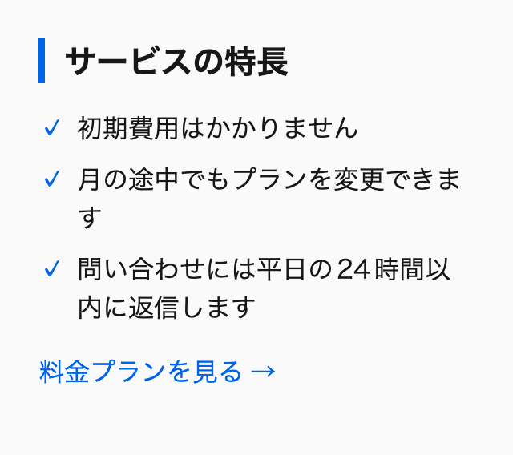
幅 320px
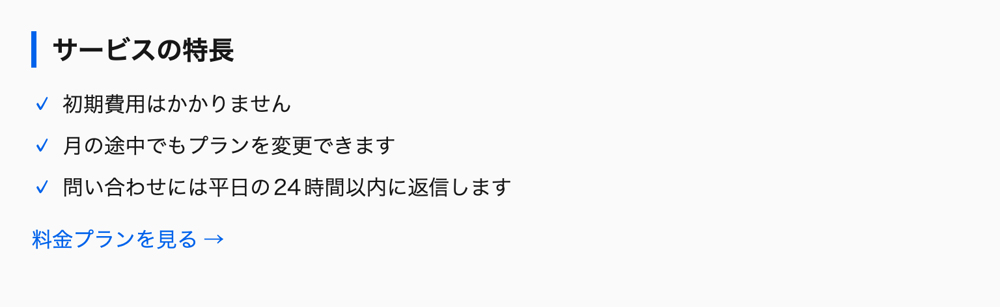
幅 768px
見出しの線は、content: "" で作った文字のない箱です。見出しを display: block flex にしているので、擬似要素はフレックスアイテムになり、block-size が効きます。幅は指定せず、border-inline-start の太さに任せています。高さの 1lh は1行の高さなので、見出しの文字の大きさを変えても、線の長さが行に合います。線は背景色ではなく border-inline-start で描いています。強制カラーモードでは背景色が消えますが、枠線は残るからです（第15章「15-5 強制カラーモードとコントラスト（巻3）」）。
チェックの記号と矢印は文字なので、代替テキストを空にしています。リストの項目は display: block grid にして、記号を1列目に、本文を2列目に置いています。本文が2行に折り返しても、2行目が記号の下に回り込みません。リストの印を消すのに list-style: none を使わない理由は、次の見出しで説明します。
::marker と ::selection の制約::marker は、リストの項目の印（マーカー）を選ぶ擬似要素です。指定できるのは、color、font-*、content など、文字に関わる一部のプロパティだけです。さらに、Safariが反映するのは color と font-size の2つに限られます（2026年10月確認）。web-featuresでも、::marker はSafariの対応が不十分なため、Baselineに入っていません。
Baseline一部のブラウザのみ
::marker
web-features 3.40.0 のデータ（2026年9月確認）
そのため、::marker に指定するのは color と font-size だけにします。印の記号を変える、番号を太くする、印をアイコンにするといった装飾は、Safariだけ元の見た目のまま残ります。こうした装飾が必要なときは、list-style-type: "" でマーカーを空にし、::before で描きます。list-style: none で消すと、SafariのVoiceOverがリストとして読み上げなくなるからです（第8章「8-3 グローバルに書いてはいけないもの（巻2）」）。番号を円で囲む例は第16章「16-4 文字とリストの装飾（巻3）」にあります。
@scope (.scoped.point-list) to (.scoped) {
li {
&::marker {
color: oklch(48% 0.17 260deg);
font-size: 1.25em;
}
}
}次のデモの1つ目のリストは、::marker で黒丸の色と大きさだけを変えています。2つ目のリストは、list-style-type: "" でマーカーを空にし、チェックの記号を ::before で描いています。デモの土台のkiso.cssがマーカーを空にしているので、1つ目では list-style-type: revert でブラウザのデフォルトの黒丸に戻しています。
デモ5-8-3 ::marker で色と大きさを変えたリストと、::before で印を描いたリスト（補足サイト）
::selection は、ユーザーが選択した範囲を選ぶ擬似要素です。指定できるのは、color、background-color、text-decoration とその関連のプロパティ、text-shadow など、ごく一部です。background-image は無視されます。iOSのSafariは ::selection に対応していないので、選択範囲はシステムの色のままになります（2026年10月確認）。
Baseline一部のブラウザのみ
::selection
web-features 3.40.0 のデータ（2026年9月確認）
選択範囲の色を変えるときは、color と background-color の両方を指定し、2つの色のコントラスト比を確かめます。片方だけを変えると、もう片方にはブラウザやユーザーの設定の色が残り、組み合わせによっては選択した文字が読めなくなります。MDNも、選択範囲の見た目を好みだけで変えないこと、変えるなら文字と背景のコントラスト比を確保することを勧めています。基準は第15章「15-5 強制カラーモードとコントラスト（巻3）」の、通常の文字で4.5:1以上です。
::selection {
background-color: oklch(30% 0.1 260deg);
color: oklch(100% 0 0deg);
}::highlight() で文字の範囲に色を付ける::highlight() は、JavaScriptで登録した文字の範囲を選ぶ擬似要素です。範囲は、CSS Custom Highlight APIで作ります。Range で始点と終点を決めて Highlight にまとめ、名前を付けて CSS.highlights に登録すると、CSSの ::highlight(名前) でその範囲に色を付けられます。範囲を要素で包まないのでDOMは変わらず、要素の境界をまたぐ範囲も1つのハイライトにできます。ページ内検索の一致箇所や、エディターの構文の色分けのように、操作に合わせて範囲を描き直す表示に使います。
const range = new Range();
range.setStart(textNode, 4);
range.setEnd(textNode, 9);
CSS.highlights.set('search-result', new Highlight(range));::highlight(search-result) {
background-color: oklch(92% 0.12 95deg);
color: oklch(20% 0 0deg);
text-decoration-line: underline;
text-decoration-thickness: 2px;
}次のデモでは、入力欄の語に一致する範囲を本文から集め、search-result という名前で登録しています。語を書き換えると、一致した範囲の背景色と下線が付け直されます。範囲を要素で包まないので、開発者ツールで本文を見てもDOMは変わりません。一致した数は、色とは別に文章でも示しています。
デモ5-8-4 入力した語に一致する範囲を、::highlight() で背景色と下線で示す（補足サイト）
Baseline新しく利用可能2026年3月から
::highlight() と CSS Custom Highlight API
web-features 3.40.0 のデータ（2026年9月確認）
2026年3月にFirefox 149が ::highlight() に対応し、主要なブラウザがそろいました。Safariは17.2から対応しているので、本書の対象のブラウザはすべて対応しています（2026年10月確認）。指定できるプロパティは ::selection とほぼ同じで、color、background-color、text-decoration とその関連のプロパティ、text-shadow などに限られます。CSS Pseudo-Elements Level 4は、ハイライトの擬似要素で使えるプロパティを、レイアウトを変えないものに限っています。padding や font-weight で範囲を目立たせることはできません。
ハイライトは、範囲を目立たせても、文書の内容は変えません。MDNによれば、Highlight の type で綴りや文法の誤りといった意味を支援技術に伝えられますが、対応は環境と種類によって異なります。CSSやJavaScriptが動かない環境では、範囲そのものが表示されません。そのため、内容の一部として読み手に伝える強調は、<mark> で書きます。<mark> は、周りの文脈との関連で目印を付けた範囲を表す要素で、検索結果のページで検索語に付ける目印のような、ページを開いた時点で決まっている強調に合っています。
ただし、<mark> も、多くのスクリーンリーダーは初期設定で読み上げを区別しない、とMDNは説明しています。強調に気付かないと内容を取り違える場面では、「3件が一致しました」のように、要点を文章でも伝えます。::highlight() と <mark> のどちらで示す範囲も、色だけで区別しません（第15章のルール no-color-only-information）。
強制カラーモードでは、color と background-color がユーザーの配色に置き換わり、text-shadow は none になります。背景色だけで示したハイライトは、周りの文字と見分けられなくなるおそれがあります。上の例で下線を組み合わせているのは、強制カラーモードで線の色を置き換えられても、線そのものは残るからです※3。
::first-letter と ::first-line を和文に使うとき::first-letter はブロックコンテナの最初の1文字を、::first-line は最初の1行を選ぶ擬似要素です。どちらも、指定できるプロパティは文字、背景、余白などの一部に限られます。和文では、1文字は仮名か漢字の1字です。MDNによれば、最初の文字の前後にある括弧や引用符のような約物も、::first-letter に含まれます。段落が開き括弧で始まれば、括弧と次の1字が一緒に大きくなります。
Baseline広く利用可能2018年1月から（新しく利用可能になったのは2015年7月）
::first-letter
web-features 3.40.0 のデータ（2026年9月確認）
::first-letter は、::before で生成した文字があれば、その最初の文字を選びます。生成コンテンツに装飾の記号を入れた要素では、本文の最初の文字ではなく、記号が大きくなります。2つを同じ要素に指定するときは、表示を確かめます。
@scope (.scoped.lead-text) to (.scoped) {
p {
&::first-letter {
color: oklch(48% 0.17 260deg);
font-size: 1.75em;
}
}
}次のデモの1つ目と2つ目の段落は、::first-letter で最初の文字を大きくしています。開き括弧で始まる1つ目では、括弧と「擬」の2文字が大きくなります。3つ目の段落は ::first-line で1行目を太字にしていて、幅のボタンを切り替えると、太字になる範囲が変わります。
デモ5-8-5 ::first-letter は開き括弧と次の1字を選び、::first-line の範囲は幅で変わる（補足サイト）
::first-line が選ぶ範囲は、要素の幅と文字の大きさで決まります。幅の狭い画面では、同じ段落でも1行に入る文字が減り、太字になる範囲も短くなります。1行目だけを要約として目立たせるような、範囲に意味を持たせる使い方はできません。使うとしても、どこで区切れても意味が変わらない装飾にとどめます。最初の文字を数行分の高さに沈める initial-letter は、本書では扱いません。2026年10月の時点で接頭辞なしの initial-letter に対応しているのはChrome系のブラウザだけで、Safariは接頭辞付きの -webkit-initial-letter だけに対応しています。
フォームの部品に付いた擬似要素のうち、入力欄の例文を選ぶ ::placeholder と、ファイルの選択ボタンを選ぶ ::file-selector-button は、「5-6 フォームの状態を表す擬似クラス」で扱います。
禁止必須の印、単位、注意書き、副題のように、読み手が知る必要のある文字を、::before や ::after の content で入れない（HTML に書く）。
no-meaningful-generated-content
推奨装飾として文字や記号を生成コンテンツで入れるときは、content: "→" / "" のように代替テキストを空にする。
empty-alt-for-decorative-content
推奨::marker に指定するのは color と font-size だけにし、記号を変える、太くする、アイコンにするといった装飾は、list-style-type: "" でマーカーを空にして ::before で描く。
marker-color-and-font-size-only
推奨::selection で選択範囲の色を変えるときは、color と background-color の両方を指定し、2つの色のコントラスト比を確かめる。
selection-color-and-background
推奨検索結果のページで検索語に付ける目印のように、内容の一部として読み手に伝える強調は <mark> で書き、::highlight() は、ページ内検索の一致や構文の色分けのように、操作に合わせて描き直す表示に使う。
mark-over-highlight-for-meaning
:before・:after の関係を十分には定めていないことの注記）img の擬似要素。2026年10月確認）::before と ::after で挿入する失敗例。現在は廃止扱い）::marker なしで描く例）<mark> - HTML | MDN